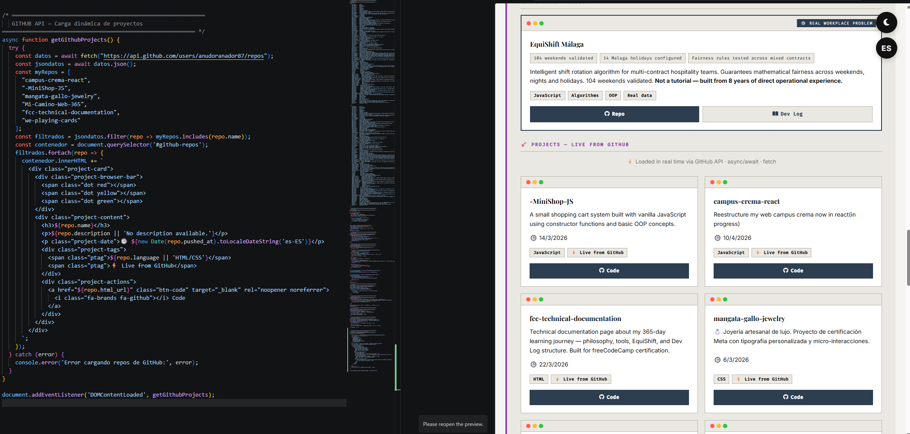
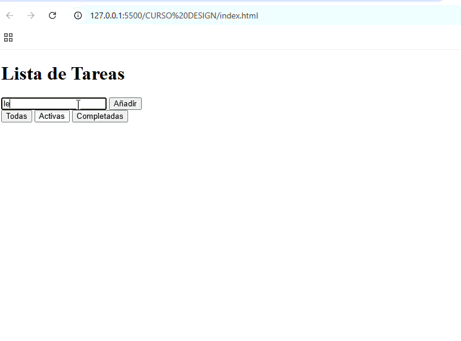
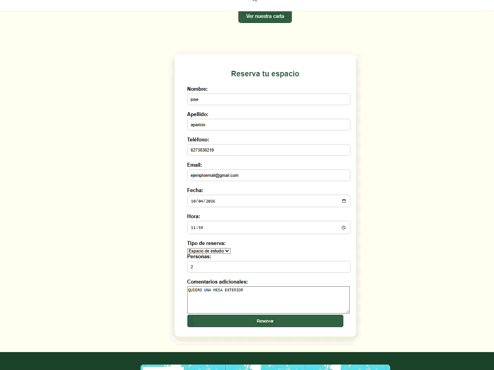

MÁLAGA, ESPAÑA — 2026VOL. I · No. 17 / 365anudoranador87.github.io
Dev Log 365
The Engineering Journal of Jose Aparicio
"La lógica es mi superpoder · La sintaxis es solo la herramienta"
| 17 días · Errores reales · Sin filtros
0Dias activo0Bugs Documentados0Proyectos publicados0Sesiones este mes0Racha actual0%Ratio bug→fix
Mostrando 0 de 0 entradas
No hay entradas para este filtro
Sobre este diario
365 días de aprendizaje. Documentados cuando estudio. Sin relleno.
Este diario arranca el 20 de febrero de 2026 — el primer día que me siento a estudiar y lo documento.
El viaje dura 365 días desde esa fecha. No hay una entrada por cada día del calendario:
hay una entrada por cada día que estudio, aprendo o construyo algo real.
Los días que no hay entrada es porque no hubo sesión. Sin excusas, sin relleno.
Cada entrada documenta errores reales, decisiones de arquitectura y el proceso de convertir
teoría en código que funciona — o que no funciona, y por qué. La base técnica viene de dos fuentes:
Meta Front-End Developer
Coursera · Professional Certificate · En progreso
freeCodeCamp
Responsive Web Design · JavaScript Algorithms · En progreso
Día 1 = 20 de febrero de 2026 · Los 365 días se cuentan desde ahí · No todos los días tienen entrada
Día 34
JS
React
CSS
Debug
Proyecto
reduce(), useState y filtros: un día de patrones que encajan.
Hoy el objetivo era consolidar reduce() — y acabé aplicándolo directamente en Campus & Crema.
Construí una sección de horarios desde cero, añadí filtros con useState tanto a los horarios
como al menú, y encadené .filter().map() por primera vez. El tercer ejercicio salió a la primera.
Resumen STAR
S — Sesión de estudio intensiva con dos frentes: teoría de reduce()
con ejercicios progresivos, y aplicación directa en Campus & Crema con dos componentes nuevos.
T — Consolidar los tres patrones de reduce() (número, objeto, array de objetos),
construir el componente Horarios con filtro por semana/finde, y añadir filtro de categorías al menú.
A — Tres ejercicios de reduce() en papel primero, luego código.
Creé src/data/Horarios.js con el array de datos, Horarios.jsx con
useState y .filter().map() encadenado, y Horarios.css
con la paleta de Campus & Crema. Añadí propiedad categoria al array de items del menú
y repliqué el patrón de filtro en Menu.jsx.
R — Dos componentes nuevos funcionando en producción. El filtro de horarios
distingue semana/fin de semana visualmente. El menú filtra por café, salado y dulce.
Arquitectura data/ + components/ aplicada correctamente.
Victorias del día
+Ejercicio 3 de reduce() (array de objetos) — resuelto a la primera sin ayuda
+Componente Horarios construido desde cero con arquitectura correcta: data/ separado de components/
+.filter().map() encadenado — primer uso real en un proyecto propio
+Filtro de categorías en el menú — useState aplicado a datos reales de Campus & Crema
+Corregido key={index} → key={item.id} en el menú
"El patrón es siempre el mismo: datos separados, estado que filtra, JSX que renderiza. Una vez que lo ves, lo ves en todas partes."
Filtro de horarios
Niveles al cierre del día
reduce() — número
85%
reduce() — objeto
55%
useState + filter
75%
Arquitectura React
70%
Debug Log
✗Tilde en variable:núm con tilde → ReferenceError en runtime
→JavaScript no acepta caracteres especiales en nombres de variable. Los acentos no existen en código.
✗Archivo no guardado: el componente no aparecía en pantalla — 20 minutos de debug innecesario
→Antes de debuggear: confirmar siempre que el archivo está guardado y el servidor corriendo.
✗Nombre inconsistente: importado como Horarios, usado en JSX como HorariosComponent
→El nombre del import y el del JSX tienen que coincidir. El componente no renderiza si no.
✗Import circular:Horarios.jsx intentaba importarse a sí mismo con ruta ./Data/Horarios
→Los datos están en src/Data/, no en src/components/. La ruta correcta es ../Data/Horarios.
✗Estado inconsistente:className comparaba con "cafe" pero onClick ponía "cafes"
→El valor del estado tiene que ser idéntico en el className y en el onClick. Una letra rompe el filtro.
✓Resultado: horarios con toggle semana/finde + menú filtrado por categoría, ambos funcionando en local y listos para deploy
"reduce() no es solo para sumar. Es para construir cualquier cosa a partir de un array."
Día 33
JS
Algoritmos
Katas, bugs y el return que siempre se me olvida.
Cinco katas resueltas. Velocidad mejorando con cada una.
El mismo error dos veces: console.log en vez de return.
Y un salto mental importante: los parámetros no se declaran, se reciben.
Resumen STAR
S — Sesión de Codewars. Katas de nivel 8-7 en JS.
T — Resolver problemas aplicando métodos de array y lógica de bucles.
A — countSheep con filter+length. findNeedle con indexOf y template literal. reverseSeq con for hacia atrás y push. zeroFuel con multiplicación y comparación. Intenté el de siglos y lo dejé.
R — Cuatro katas completadas, una abandonada. Cada kata más rápida que la anterior.
Victorias del día
+filter + length — patrón limpio para contar con condición
+Bucle for hacia atrás — nunca lo había hecho, ya lo tengo
+Una comparación ya devuelve true/false — el ternario sobra
+Velocidad aumentando — el último kata fue mucho más rápido que el primero
"Los simples me dan más guerra — no transformas, construyes desde cero."
Debug Log
✗Bug recurrente: console.log en vez de return — dos veces en el mismo día
→console.log es para mí. return es para el programa. No son lo mismo.
✗Bug: Redeclaré los parámetros dentro de la función con let
→Los parámetros ya existen. No los declaras, los recibes.
✗Bug: push[i] en vez de push(i) — corchetes en lugar de paréntesis
✗Bug: for(let i = myarray.length) — empezaba en 0, nunca entraba al bucle
→El array estaba vacío. El inicio del bucle es n, no myarray.length.
✓Cuatro katas completadas. El kata de siglos, pendiente — lo retomo mañana.
Código del día
// reverseSeq — el que más costó
const reverseSeq = n => {
let myarray = [];
for (let i = n; i > 0; i--) {
myarray.push(i);
}
return myarray;
};
// zeroFuel — comparación directa sin ternario
const zeroFuel = (distanceToPump, mpg, fuelLeft) => {
const millaspuedoHacer = mpg * fuelLeft;
return millaspuedoHacer >= distanceToPump;
};
"return myarray — no return zeroFuel, no return []. El nombre correcto importa."
Día 32
React
useState
Debug
Componentes
Mi primer componente con useState construido desde cero.
Quería probar React solo, sin guía. Construí un botón que alterna entre "Hola" y "Adiós" usando un boolean como estado. Más errores de los esperados, más aprendizaje del que esperaba.
Resumen STAR
S — Siguiendo el curso de Meta y Jonas, quise salirme del guión y probar un componente con estado yo solo, sin que nadie me diera el código.
T — Crear un componente ButtonChange que alterne entre "Hola" y "Adiós" al hacer click, usando useState con un boolean.
A — Razoné en papel primero: elegí boolean sobre string porque es más React — solo necesito invertir el valor con !. Fui construyendo el componente pieza a pieza: estado, ternario, onClick, elemento padre, separación de archivos.
R — Componente funcionando, importado desde App.js, con texto dinámico en el botón y fuera de él.
Victorias del día
+Elegí boolean sobre string por lógica propia — más React, más limpio
+Entendí dónde va el ternario — dentro del botón actualiza el botón, fuera actualiza fuera
+Separé correctamente App.js y ButtonChange.js sin ayuda
"Cuidado con las llaves — antes eran sintaxis en Vanilla, ahora son sintaxis en React."
Niveles al cierre del día
useState
55%
JSX / ternario
60%
Componentes
50%
Debug Log
✗Bug 1:buttonChange con minúscula — React lo ignoró como componente
→Los componentes de React siempre con mayúscula. Sin excepción.
✗Bug 2:getSaludo en vez de setSaludo — get es leer, set es cambiar
→La convención existe por algo. El prefijo describe la intención.
✗Bug 3: El botón no se renderizaba — nada envuelto en elemento padre
→En React el return solo devuelve un elemento raíz. En Vanilla no pienso así todavía.
✗Bug 4:( => en vez de () => — arrow function sin cerrar paréntesis
→Las llaves en JSX son de expresión, no de bloque. Sintaxis distinta a Vanilla.
✓Resultado: ButtonChange funcionando en App.js, texto dinámico dentro y fuera del botón
"boolean sobre string — no necesito saber qué valor tiene, solo lo niego."
Día 31
JS
Async/Await
API
Debug
Proyecto
Weather API en vivo en Campus & Crema. Async/await que funciona de verdad.
Hoy implementé la Weather API en Campus & Crema — segunda API del día, después de la GitHub API en el CV.
No fue inmediato — hubo errores de key, de scripts, de servidor local —
pero al final el widget del tiempo aparece en el hero, en producción.
Resumen STAR
S — Campus & Crema tenía el hero estático. Quería añadir algo dinámico y útil: el tiempo en Málaga para que el cliente supiera si apetecía terraza antes de reservar.
T — Conectar la OpenWeatherMap API con async/await, renderizar ciudad, temperatura y descripción en el widget del hero.
A — Registré cuenta en OpenWeatherMap, generé API key, escribí la función async con fetch, try/catch, template literal y querySelector. Separé el script del formulario para resolver un conflicto. Moví la llamada dentro de DOMContentLoaded. Añadí CSS con backdrop-filter para el estilo del widget.
R — El widget muestra "📍 Málaga · 18°C · algo de nubes" en tiempo real, encima del título principal. Primer fetch a una API externa en producción.
Victorias del día
+Weather API conectada y funcionando en el hero de Campus & Crema
+Identificé que el error era de otro script, no de la API — y lo separé
+Widget con glassmorphism integrado en el hero de Campus & Crema
"No era difícil. Era nuevo. Hay diferencia."
Niveles al cierre del día
async/await
60%
APIs externas
45%
Debug de scripts
55%
Debug Log
✗Bug 1: API key generada pero devuelve 401 — la inserté inmediatamente después de registrarme
→Fix: Las keys de OpenWeatherMap tardan hasta 2 horas en activarse. Esperé más de 10 minutos sin saber esto. Lección: leer la documentación antes de asumir que algo está roto.
✗Bug 2: El widget no aparecía aunque el fetch devolvía 200 — ValidarFormulario lanzaba error en index.html porque buscaba un formulario que no existe en esa página
→Fix: Separé el script del formulario a un archivo independiente. Un script roto interrumpe todo lo que viene después.
✗Bug 3: Intenté abrir el archivo desde file:// — el fetch no funciona sin servidor local
→Fix: Live Server en VS Code. Siempre necesario para fetch a APIs externas.
✗Bug 4: myApiWeather() no se ejecutaba sola al cargar — me olvidé del DOMContentLoaded
→Fix: Añadí la llamada dentro de DOMContentLoaded. Sin esto, la función existe pero nadie la llama.
✓Resultado: widget en vivo, datos reales, en producción en Campus & Crema
"Nota: esta entrada cubre solo Campus & Crema. La GitHub API del CV está documentada en la entrada del día anterior."
Día 30
JS
Async/Await
API
Proyecto
DOM
Por fin async/await deja de ser chino. Lo implementé en mi CV web, en vivo, desde la GitHub API.
Tras semanas viendo async/await en teoría, hoy lo implementé de verdad en mi portfolio:
carga dinámica de proyectos desde la API pública de GitHub. Lo más caótico no fue el async —
fue el DOM. No por difícil, sino por lo tedioso que es manipularlo a mano.

Proyectos cargados en tiempo real · GitHub API · async/await · fetch
Resumen STAR
S — Llevaba semanas estudiando Promises y async/await con Jonas. Conceptos que siempre me parecían complicados en teoría, pero sin caso de uso real que los anclara.
T — Implementar async/await de forma justificada en mi CV web — no por añadirlo, sino porque tuviera sentido real. La idea: cargar los proyectos dinámicamente desde la API pública de GitHub.
A — Construí la función getGithubProjects() paso a paso: fetch a la API, conversión a JSON, filtrado por array de nombres permitidos, y render dinámico con innerHTML y template literals. Razoné cada paso en papel antes de escribir código. Eliminé todas las tarjetas estáticas del HTML y dejé solo el contenedor dinámico.
R — La sección de proyectos del CV ahora se carga en tiempo real desde GitHub. Si añado un repo nuevo, solo actualizo el array — sin tocar el HTML. Badge visible: "⚡ Loaded in real time via GitHub API · async/await · fetch".
Victorias del día
+async/await implementado con propósito real — no como ejercicio, como feature de producción
+Aprendí a filtrar arrays de objetos con lista blanca: .filter() + .includes()
+Descubrí que las arrow functions sin llaves tienen return implícito — menos código, misma lógica
+innerHTML con template literals es mucho más limpio que crear elementos uno a uno con createElement
+Los errores de llaves y paréntesis los detecto cada vez más rápido — el paper-first ayuda
"Lo más caótico no fue el async/await — fue el DOM. No por difícil, sino por lo tedioso que es manipularlo a mano. Por eso existe React."
Niveles al cierre del día
async/await
55%
fetch / API
60%
DOM manipulation
65%
filter / includes
70%
Debug Log
✗Bug 1:const datos declarado dos veces — la segunda variable debía llamarse jsondatos
→Fix: renombrar correctamente. Lección: cada variable debe tener un nombre semántico que refleje lo que contiene
✗Bug 2:respuesta.json() cuando la variable se llamaba datos — los nombres no coincidían
→Fix: releer variable por variable antes de ejecutar. El paper-first lo habría evitado
✗Bug 3:Myrepos con M mayúscula — JS es case-sensitive, no encontraba la variable
→Fix: revisar mayúsculas. Cada vez lo detecto más rápido — el ojo se entrena
✗Bug 4:filter con { } sin return — devolvía array vacío sin error visible
→Fix: con llaves necesitas return explícito. Sin llaves, el return es implícito. Opté por la versión sin llaves
✗Bug 5:forEach fuera de la función — filtrados no existía en ese scope
→Fix: mover el forEach dentro de getGithubProjects(). Las dichosas llaves
✗Bug 6: olvidé seleccionar el contenedor del HTML con querySelector — sin referencia no puedo insertar nada
→Fix: const contenedor = document.querySelector('#github-repos') antes del forEach
✗Bug 7:try/catch no incluido de primeras — ¿qué pasa si la API falla?
→Fix: envolver todo en try/catch. En producción siempre — una API puede fallar o no haber conexión
✓Resultado: CV carga proyectos en tiempo real desde GitHub API. Sin HTML estático. Sin tocar el código para añadir proyectos nuevos.
"Si el array es la lista blanca y includes() es el portero, filter() es la cola. Lo vi claro cuando lo dibujé en papel."
Día 29
JS
Algoritmos
Codewars
Ternarios anidados, filter+reduce y spread operator en tres katas.
Tres ejercicios de Codewars nivel 8 resueltos desde cero, razonando en voz alta antes de escribir código.
Descubrimiento del día: los ejercicios "simples" me cuestan más que los complejos.
Mi cerebro piensa en procesos, no en operadores.
Resumen STAR
S — Sesión de algoritmos en Codewars. Tres katas de nivel 8 resueltas en la consola del navegador, razonando cada paso antes de codificar.
T — Resolver makeNegative, sumPositive y reverseString sin soluciones directas — solo pistas y lógica propia.
A — makeNegative: descubrí que los ternarios se pueden anidar. sumPositive: apliqué filter + reduce en cadena. reverseString: usé spread operator para convertir el string en array, reverse(), y join() para reconstruirlo.
R — Los tres ejercicios funcionan y los entiendo. Cada uno reveló un concepto que no sabía que me faltaba.
Victorias del día
+Ternarios anidados — no sabía que se podían encadenar, ahora sí
+filter + reduce en cadena — filtra primero, luego suma
+Spread operator en strings — [...str] explota el string en array de caracteres
"Los ejercicios fáciles me cuestan más que los difíciles. Mi cerebro piensa en procesos, no en operadores."
Niveles al cierre del día
JavaScript
42%
Algoritmos
28%
Resolución de problemas
35%
Debug Log
✗Bug 1: Ternario sin return — el valor se calculaba y se perdía
→Fix: return condicion ? valorA : valorB — el return va delante del ternario
✗Bug 2: sumPositive — variable externa en vez del parámetro arr
→Fix: la función recibe arr como parámetro, no una variable externa
✗Bug 3: console.log(sumPositive) sin paréntesis — logueaba la función entera
→Fix: console.log(sumPositive([1, -4, 7, 12, -3])) — llamarla con el array
✓makeNegative ✓ — sumPositive ✓ — reverseString ✓
Código del día
// Kata 1 — makeNegative (ternarios anidados)
function makeNegative(numero) {
return numero > 0 ? -numero
: numero < 0 ? numero
: 0;
}
// Kata 2 — sumPositive (filter + reduce)
function sumPositive(arr) {
const positivos = arr.filter(num => num > 0);
return positivos.reduce((acc, num) => acc + num, 0);
}
// Kata 3 — reverseString (spread operator)
const reverseString = (str) =>
[...str].reverse().join("");
"Cada kata tiene un concepto escondido. El ejercicio fácil enseña más de lo que parece."
Día 28
React
Vite
Debug
Proyecto
Deploy
Campus & Crema entra en React. De vanilla a componentes en un día.
Hoy migré mi proyecto Campus & Crema de HTML/CSS/JS vanilla a React + Vite.
No fue solo copiar código — fue resolver una cadena de problemas reales:
repo roto en GitHub, Node desactualizado, imports que no encontraban archivos.
Al final del día el proyecto está desplegado en Vercel y funcionando.
Campus & Crema React — demo en vivo · vercel.app
Resumen STAR
S — Campus & Crema llevaba semanas funcionando como proyecto vanilla. Tenía carrusel, acordeón, dark mode y FormValidator en OOP — pero todo en archivos sueltos sin arquitectura de componentes.
T — Migrar el proyecto completo a React + Vite, mantener todas las funcionalidades, y desplegarlo en Vercel.
A — Creé la estructura de carpetas con los 6 componentes (Navbar, Hero, Carousel, Menu, ReservationForm, Footer). Decidí qué componentes necesitaban estado y cuáles no. Resolví los errores de GitHub, actualicé Node a v20, corregí imports rotos y CSS faltante. Añadí el array de productos con imágenes al componente Menu en grid responsive.
R — Proyecto migrado, estructurado por componentes, con decisiones de arquitectura documentadas, y desplegado en https://campus-crema-react.vercel.app/
Victorias del día
+Primer proyecto propio migrado a React — de vanilla a componentes reales
+Decisión de arquitectura consciente — estado local vs. estado en App.jsx razonada antes de codear
+Repo de GitHub arreglado desde Codespaces sin VSCode local
+Menú en grid responsive con imágenes — auto-fit minmax sin media queries
+Desplegado en Vercel con URL limpia el mismo día
"Es más fácil de lo que parece. Yo lo complico demasiado."
Niveles al cierre del día
React componentes
40%
useState
45%
Vite + config
35%
Git / deploy
65%
Debug Log
✗Bug 1: Repo subido con carpeta extra — GitHub veía campus-crema-react/ dentro del repo en lugar de src/ en la raíz
→Fix: git init desde dentro de la carpeta correcta + git push -f para forzar la sobreescritura
✗Bug 2: crypto.getRandomValues is not a function — Vite no arrancaba
→Fix: Node 16 es incompatible con Vite moderno. nvm install 20 + nvm use 20 lo resolvió
✗Bug 3: Servidor de desarrollo roto — módulo no encontrado
→Fix: import './Footer.css' apuntaba a un archivo que no existía. Una sola palabra puede romper todo el servidor
✗Bug 4: Remote origin already exists al intentar añadir la URL del repo
→Fix: git remote set-url origin [url] en lugar de git remote add
✓Resultado: 6 componentes funcionando, grid de menú con imágenes, desplegado en Vercel
Código del día
// Decisión: estado local por componente
// Carousel sabe qué foto mostrar — nadie más necesita saberlo
function Carousel() {
const [currentIndex, setCurrentIndex] = useState(0);
return (
<div className="carousel">
<img src={imagenes[currentIndex]} alt="foto" />
<button onClick={() => setCurrentIndex(i => i - 1)}>←</button>
<button onClick={() => setCurrentIndex(i => i + 1)}>→</button>
</div>
);
}
// Grid responsive sin media queries
// auto-fit hace el trabajo solo
.menu-grid {
display: grid;
grid-template-columns: repeat(auto-fit, minmax(220px, 1fr));
gap: 1.5rem;
}
"Una letra en mayúscula de más, una extensión que falta — y Vite no arranca. React es estricto porque Node lo es."
Día 27
JS
DOM
Debug
Proyecto
La primera interfaz que funciona. Y la construí yo.
Ya no veo JavaScript como fórmulas raras. Sigo cometiendo errores, casi siempre los mismos, pero ya le voy viendo el sentido a construir cosas. Hoy lo más importante que aprendí no fue sintaxis — fue que un código ordenado es igual a éxito.
Resumen STAR
S — Ejercicio 04 del reto DOM: sistema de pedidos de sala. Carta con categorías, ticket reactivo, botones de cantidad y envío a cocina.
T — Construir renderCarta, añadirAlTicket, cambiarCantidad y renderTicket desde cero, con los datos en un array y el DOM reflejándolos.
A — Fui función a función en orden. Cuando me lié con el código desordenado, paré, lo limpié y continué. Sin eso, me hubiera perdido del todo.
R — Interfaz funcional: añadir platos, subir y bajar cantidades, item desaparece al llegar a cero. Y lo mejor: escrito el código, lo entiendo de mi propia letra. Eso antes no pasaba.
Victorias del día
+Primera interfaz DOM compleja funcionando — carta + ticket reactivo
+innerHTML con template literals — HTML y variables en una sola línea limpia
+splice + findIndex — eliminar elementos del array por id
+Los patrones se repiten — ya los reconozco antes de escribirlos
"Un código ordenado === éxito. Código desordenado y sin nombres de variables claras, fácil perderse."
Niveles al cierre del día
DOM manipulation
55%
Array methods
60%
Sintaxis JS
45%
Debug Log
✗Bug 1: ticket.forEach(("item", => { — paréntesis de más e "item" entre comillas
→Fix: ticket.forEach(item => { — sin comillas, sin paréntesis extra. El parámetro no es un string.
✗Bug 2: cont resultado — typo. "cont" no existe en JavaScript.
→Fix: const. Las palabras reservadas no admiten variaciones.
✗Bug 3: ticket.splice(indice, 1) — "indice" no existía como variable, solo como intención.
→Fix: const guardoIndice = ticket.findIndex(...) primero, luego splice. Guardar antes de usar.
✗Bug 4: addEventListener("click," => — la coma dentro de las comillas.
→Fix: addEventListener("click", () => — siempre dos argumentos, coma fuera de las comillas.
✓Carta renderizada desde datos, ticket reactivo, cantidades y eliminación funcionando.
"Orgulloso de haber construido esto. No ha sido fácil, pero casi siempre se sigue el mismo patrón — y eso es lo que más me está entrando."
Día 26
JS
POO
Debug
Objetos
Cuaderno
Cuaderno de Pitágoras: 18 Ejercicios de Objetos. De "esto es muy complicado" a solución profesional.
Un día de estudio intensivo. 18 ejercicios documentados en tiempo real. Cada intento, cada error, cada "¿por qué?" anotado en el cuaderno. Desde sintaxis básica hasta Jugador Perfecto con map/join. 20 minutos debuggeando el Ej. 18, decisión de empezar de cero, solución limpia.
Resumen STAR
S — Un día estudiando Objetos en JavaScript. Niveles 1–6, 18 ejercicios. Metodología: cuaderno físico anotando el razonamiento en español, luego codificar, luego documentar el resultado.
T — Dominar sintaxis de objetos, this, métodos complejos, spread y destructuring. Llegar a Jugador Perfecto: objeto con 5 propiedades, 6 métodos y lógica completa.
A — Nivel 1 (Ej. 1–3): varios intentos ajustando sintaxis. Nivel 2 (Ej. 4–6): confusión parámetros vs. propiedades y =+ vs. +=. Nivel 3 (Ej. 7–9): el 7 a la primera; debugging progresivo en 8 y 9. Nivel 4 (Ej. 10–12): los tres a la primera. Nivel 5 (Ej. 13–15): transfer learning, patrón reconocido sin ayuda. Nivel 6 (Ej. 18): 20 minutos pensando, restart completo, solución con map/join.
R — 18/18 completados. Curva de aprendizaje clara: menos intentos por ejercicio a medida que avanzaba el día. Patrón personal identificado: "me lo complico demasiado — confiar más en la lógica inicial." Cero hints. Código limpio, documentación en tiempo real.
Victorias del día
+Ej. 1–3: Sintaxis básica dominada. Notación punto vs. bracket sin confusión.
+Ej. 4–6: BREAKTHROUGH en this — finalmente distingo parámetro de propiedad. El momento clave del día.
+Ej. 7: A la primera. Template literals con objetos: sólido.
+Ej. 8: Superé la confusión === vs. =. Validación con if/else clara.
+Ej. 9: 3 intentos → entendí que item es un objeto, y que reduce necesita item.precio, no item.
+Ej. 10–12: A la primera en todos. Concepto consolidado.
+Ej. 13–15: Transfer learning — spread de arrays → objetos sin fricción.
+Ej. 18: 20 min bloqueado → restart → solución con map/join. Decidir empezar de cero también es una habilidad.
+CRÍTICO: 0 hints. Razonamiento 100% independiente. Todo documentado en tiempo real.
"ES MUCHO MÁS SENCILLO DE LO QUE YO LO HACÍA." —Después de resolver el Ej. 4 correctamente.
Dominé Arrays en una sesión: 18 ejercicios, de lo simple a reduce()
Hoy completé 18 ejercicios de arrays sin soluciones copiadas. Desde acceso básico hasta encadenamiento de métodos. La mayor dificultad: entender que dentro de callbacks, el parámetro YA ES el elemento. La victoria: reduce() dejó de ser terrorífico.
Resumen STAR
S — Estaba estudiando Bloque 2 (Arrays) de mi Libreta 1. Tenía 32 ejercicios progresivos listos (sin soluciones). Hacía poco había aprendido map(), filter(), reduce() en Jonas Schmedtmann, pero solo teóricamente. Necesitaba practicar sin "cheat".
T — Hacer máximo 15-20 ejercicios en una sesión, desde lo simple (acceso, push, pop) hasta lo complejo (reduce, encadenamiento, spread, destructuring). Meta: entender el PATRÓN, no memorizar.
A — Trabajé en bloques temáticos:
Nivel 1 (1.1–1.6): Acceso, mutantes (push, pop, shift, unshift) — rápido, sin problemas
Nivel 2 (2.1–2.6): No-mutantes (map, filter, find, includes, slice, forEach) — algunos bloqueos (2.3, 2.6)
Nivel 3 (3.1–3.3): reduce() — el más difícil, pero lo logré
Nivel 4 (4.1–4.3): Encadenamiento — errores con tipos de datos, aprendí a corregir
Nivel 5 (5.1–5.5): Spread y destructuring — nuevo territorio, lo capté rápido
R — Completé 18 ejercicios sin soluciones. Dominé: acceso a arrays, métodos mutantes/no-mutantes, forEach, reduce (con su acumulador), encadenamiento, spread operator, destructuring básico. Falta: automatizar reduce(), callbacks en objetos de arrays, destructuring avanzado.
Victorias del día
+Dominé .map() y .filter() — entendí la diferencia (transformar vs seleccionar)
+reduce() dejó de ser "la bestia negra" — ahora veo acumulador + callback como patrón
+Aprendí a corregir errores (NaN, undefined) analizando qué dato tenía en cada paso
+Encadenamiento de métodos — .filter().map().reduce() en una línea
+Spread operator y destructuring — sintaxis nueva, la capté rápido
"La lógica no andaba mal, era la sintaxis. Eso es aprendizaje real — ver el error, analizarlo, corregirlo."
Niveles al cierre del día
Métodos Mutantes (push, pop, shift, unshift)
95%
No-mutantes (.map, .filter, .find, .includes)
85%
reduce() — acumulación
70%
Encadenamiento de métodos
80%
Spread operator & destructuring
75%
Debug Log
✗Bug 1 (Ejercicio 2.1 .map()): Escribí numeros.map(num => numeros.num) — intentaba acceder a una propiedad que no existía. Pensaba que numeros.num era el elemento.
→Fix 1:num YA ES el elemento. No necesito volver al array. Debería ser num => num * 2. Patrón clave: dentro del callback, el parámetro es el dato.
✗Bug 2 (Ejercicio 2.3 .find() con objetos): Escribí usuarios.find(id => id === 2) — el parámetro era un OBJETO, no un número. Bloqueado 15 minutos.
→Fix 2: Debería ser usuarios.find(obj => obj.id === 2). El callback recibe objetos del array. Necesito acceder a obj.id para llegar al número.
✗Bug 3 (Ejercicio 2.6 .forEach()): Intenté guardar el resultado de .forEach() en una variable. Escribí const iteracion = numeros.forEach(...) y luego console.log(iteracion).
→Fix 3: .forEach() NO retorna nada (retorna undefined). Solo ejecuta. El console.log debe estar DENTRO del callback, no fuera.
✗Bug 4 (Ejercicio 3.2 .reduce() contar): Escribí palabras.reduce((acc, num) => acc + num.length, 0) — sumé longitudes de palabras en lugar de contar cuántas había.
→Fix 4: Para contar, no es acc + num.length, es acc + 1. Cada iteración suma 1, no la longitud. Malinterpreté "contar" vs "sumar longitudes".
✗Bug 5 (Ejercicio 4.2 map + reduce con objetos): Después de .map() tenía un array de NÚMEROS [2, 1, 3], pero en .reduce() escribí (acc, obj) => acc + obj.precio — obj era número, no objeto.
→Fix 5: Después de cada método, el tipo de dato CAMBIA. .map() convierte objetos en números. Entonces en .reduce() después de .map(), el parámetro es número, no objeto. Debo pensar qué retorna cada paso.
→Fix 6:+ con arrays concatena como strings: "1,2,34,5,6". Para arrays, necesito [...arr1, ...arr2] (spread dentro de corchetes).
✗Bug 7 (Ejercicio 5.3 destructuring): Hice acceso normal const c1 = colores[0] en lugar de destructuring.
→Fix 7: Destructuring es const [c1, c2, c3] = colores. Es más limpio que acceso individual. Concepto nuevo pero lo capté rápido.
✗Bug 8 (Ejercicio 5.5 destructuring en parámetros): Escribí ({nombre, edad}) => console.log(`${nombre.nombre} tiene ${edad.edad}`) — volví a acceder al objeto cuando ya estaba destructurado.
→Fix 8: Cuando usas destructuring en parámetros, ya tienes los valores extraídos. No es nombre.nombre, es solo nombre. El parámetro YA ES el valor.
✓Resultado final: 18 ejercicios completados. Dominé métodos, reduce(), encadenamiento, spread, destructuring. Falta: automatizar reduce() y callbacks con objetos.
Código del día
// El patrón que más costó entender:
// Callbacks reciben el ELEMENTO, no el array
// ❌ MAL (lo que hice muchas veces):
usuarios.map(usuario => usuario.usuarios.nombre)
productos.reduce((acc, prod) => acc + prod.productos.precio, 0)
// ✅ BIEN (lo que aprendí):
usuarios.map(usuario => usuario.nombre)
productos.reduce((acc, prod) => acc + prod.precio, 0)
// El parámetro (usuario, prod) YA ES el objeto.
// No necesito volver al array original.
// Encadenamiento — el flujo:
const resultado = estudiantes
.filter(est => est.calificacion >= 8) // objetos
.map(est => est.nombre) // strings
.length // número
// Cada paso transforma el tipo de dato.
// Spread vs +
const arr1 = [1, 2];
const arr2 = [3, 4];
arr1 + arr2 // "1,23,4" (string, MALO)
[...arr1, ...arr2] // [1, 2, 3, 4] (array, BIEN)
// Destructuring — lo nuevo
const [a, b, ...resto] = [1, 2, 3, 4, 5]
// a = 1, b = 2, resto = [3, 4, 5]
"El error más común: confundir el parámetro del callback (el elemento) con el array original. Dentro de un callback, el parámetro YA ES lo que necesitas."
Día 24
JS
DOM
Debug
Filtros, checkboxes y llaves perdidas. La lógica vive en mi cabeza. La sintaxis, casi.
Dos proyectos, un mismo día. Construí la lógica de filtros de Campus & Crema
y marqué tareas como completadas en la TodoList. Todo desde cero,
Cada error fue mío — y por eso los recuerdo.
Resumen STAR
S — Dos frentes abiertos: filtros de categoría en Campus & Crema y funcionalidad de completado en la TodoList.
T — Filtros: seleccionar botones, escuchar clicks, quitar y añadir clase .activo. TodoList: checkbox que tacha en rojo el texto de la tarea, reversible.
A — En los filtros: razoné el flujo completo — querySelectorAll → forEach → addEventListener → forEach interior para quitar .activo → añadir .activo al clicado. En la TodoList: creé checkbox con JS, envolví el texto en un span para no tachar el botón Eliminar, usé completada.checked con if/else para marcar y desmarcar.
R — Filtros: lógica construida, pendiente conectar el botón clicado. TodoList: marcar y desmarcar funciona. Bug de llave extra resuelto.
Victorias del día
+Entendí por qué toggle no sirve para filtros múltiples
+Creé un span para aislar el texto del botón
+completada.checked es booleano — no necesita comparación
+TodoList funciona: añadir, eliminar, completar y descompletar
"La lógica ya vive en mi cabeza. La sintaxis es solo el uniforme."
Niveles al cierre del día
DOM
50%
JS Events
50%
Debug Log
✗Bug 1:btnfilter.addEventListener — listener en la lista entera, no en cada elemento
→Fix: querySelectorAll devuelve una lista — recorrer con forEach primero
✗Bug 2:btn.addEventListener("click", =>{ — arrow function sin ()
→Fix: la función anónima siempre lleva () antes de la flecha
✗Bug 3:myspan.style.textDecoration = "none" && myspan.style.color = "black" — dos asignaciones con &&
→Fix: cada asignación va en su propia línea
✗Bug 4: Llave extra } suelta — SyntaxError: missing ) after argument list
→Fix: contar llaves de cierre — cada bloque abre y cierra el suyo
✓TodoList operativa: añadir, eliminar, completar y descompletar funcionan
Código del día
// Checkbox que tacha solo el texto, no el botón
const myspan = document.createElement("span");
myspan.innerText = texto;
miLista.appendChild(myspan);
const completada = document.createElement("input");
completada.type = "checkbox";
miLista.appendChild(completada);
completada.addEventListener("click", () => {
if (completada.checked) {
myspan.style.textDecoration = "line-through";
myspan.style.color = "red";
} else {
myspan.style.textDecoration = "none";
myspan.style.color = "black";
}
});
"No copié nada. Cada error fue mío — y por eso lo recuerdo."
Día 23
JS
CSS
Debug
DOM
Primera Todo List funcional. El plato cocinado, servido y retirado.
Hoy construí mi primera todo list desde cero en vanilla JS — añadir tareas, borrarlas, y estilo básico con CSS.
Aprendí la diferencia entre propiedad y método a base de errores, y descubrí que CodePen 2.0 miente.
El array tareas[] sigue vacío — mañana lo llenamos.
Resumen STAR
S — Cuarto ejercicio impreso de la serie vanilla JS: todo list básica con añadir, borrar y filtros. Sin framework, sin ayuda externa.
T — Construir una lista funcional: capturar el input, crear elementos dinámicamente en el DOM, borrarlos al pulsar un botón, y añadir estilos CSS básicos.
A — Empecé con el HTML estático, capturé los elementos con getElementById, creé el addEventListener del botón añadir, usé createElement y appendChild para montar cada <li> con su botón borrar dentro, y remove() para eliminarlo. Luego CSS con flexbox para centrar el layout.
R — Todo list funcional desplegada en JSFiddle. Añadir tareas ✓, borrar tareas ✓, layout centrado ✓. Filtros de activas/completadas quedan para mañana.
Victorias del día
+Primera todo list 100% propia — lógica razonada sin copiar soluciones
+createElement + appendChild + remove() dominados
+Diferencia clara entre propiedad (=) y método (()) — interiorizada por error propio
+Layout centrado con Flexbox sin consultar — memoria muscular CSS activada
"El plato no está servido hasta que haces el appendChild. Cocinado no es lo mismo que en la mesa."
Niveles al cierre del día
DOM Manipulation
55%
Event Listeners
65%
CSS Flexbox
60%
OOP / Arrays
35%
Debug Log
✗Bug 1:event usado sin declarar como parámetro de la función
→Fix: el evento llega como parámetro — function(e) o function(event)
✗Bug 2:innerHTML() con paréntesis — confundí propiedad con método
→Fix: las propiedades se asignan con =, los métodos se llaman con ()
✗Bug 3:classList.remove("li") — confundí eliminar elemento con eliminar clase CSS
→Fix: miLista.remove() sin argumentos elimina el elemento entero del DOM
✗Bug 4:lista.appendChild(eliminarTarea) — metí el botón en el <ul> en vez del <li>
→Fix: el botón pertenece a la tarea (miLista), no a la lista padre
✗Bug 5 (entorno): CodePen 2.0 ejecutaba el código sin errores visibles pero nada funcionaba
→Fix: migrar a JSFiddle — el problema era el entorno, no el código
✓Todo list funcional en JSFiddle — añadir y borrar tareas operativos
Código del día
// Crear tarea con botón borrar integrado
añadir.addEventListener("click", function(e) {
const texto = tarea.value;
if (texto !== "") {
const miLista = document.createElement("li");
miLista.textContent = texto;
// Montar el plato completo antes de servir
const eliminarTarea = document.createElement("button");
eliminarTarea.textContent = "Eliminar";
eliminarTarea.addEventListener("click", function() {
miLista.remove(); // elimina el elemento, no una clase
});
miLista.appendChild(eliminarTarea); // botón → li
lista.appendChild(miLista); // li → ul
tarea.value = "";
}
});
En acción

Todo list vanilla JS — día 35
"CSS para estilos. JS para lógica. El botón hover no necesita JavaScript — necesita dos líneas de CSS."
Día 22
JS
POO
Debug
Proyecto
FormValidator completado. Validación OOP desde cero.
Hoy completé la clase ValidarFormulario para Campus & Crema.
showError, showSuccess, control de esCorrecto y DOM dinámico —
todo escrito a mano, todo entendido antes de avanzar.
Resumen STAR
S — El formulario de reservas de Campus & Crema tenía validación básica con Formspree pero sin feedback visual para el usuario.
T — Implementar una clase ValidarFormulario con métodos showError, showSuccess y control del estado esCorrecto.
A — Construí los métodos paso a paso: primero el condicional para evitar spans duplicados, luego la creación dinámica del span con document.createElement, inserción con input.after(), y control de esCorrecto en el submit con forEach + condicional.
R — Formulario validado funcionando. Feedback visual en tiempo real. La clase es reutilizable para cualquier formulario del proyecto.
Victorias del día
+showError completo — creación dinámica de spans en el DOM
+showSuccess completo — limpieza de errores y cambio de estado visual
+esCorrecto actualizado correctamente en submit
+Aprendido: input.after() e insertAdjacentElement para inserción precisa en el DOM
"La variable siempre sin comillas. El orden dentro del método importa tanto como la lógica."
Niveles al cierre del día
JS — POO
52%
DOM dinámico
55%
Validación de formularios
70%

Debug Log
✗Bug 1: document.createElement sin el prefijo document — JS no encontraba la función
→Fix: siempre document.createElement(), no createElement() suelto
✗Bug 2: El span de error se creaba antes de comprobar si ya existía uno — spans duplicados en cada blur
→Fix: el condicional de limpieza siempre al principio del método, antes de crear nada
✗Bug 3: Llave extra }} cerraba la clase antes de tiempo — showSuccess quedaba fuera
→Fix: contar llaves de apertura y cierre. Una clase, un cierre.
✗Bug 4: esCorrecto nunca se actualizaba a true — el formulario nunca se enviaba
→Fix: resetear a true antes del forEach, y ponerlo a false dentro si validarCampos devuelve false
✓Resultado: ValidarFormulario funciona. Feedback visual en tiempo real. Lista para Campus & Crema.
"nextElementSibling: la mesa de al lado en el café."
Día 21
JS
POO
Debug
DOM
FormValidator: Constructor OOP, RegEx Rules, y el patrón Array.from() en el DOM
Dominé la arquitectura completa del constructor FormValidator tras una sesión profunda de debugging científico. Copié línea por línea en papel, anotando cada paso en Spanish. Atrapé 8 bugs diferentes — desde confusiones conceptuales (Array.from) hasta errores de scope y orden de ejecución. Descubrí que la mayoría de errores OOP vienen de entender DÓNDE y CUÁNDO ocurre cada cosa. Listo para métodos de validación.
Resumen STAR
S — Estudiando validación de formularios HTML con clases OOP. Necesitaba entender cómo un FormValidator T — Completar el constructor de la clase FormValidator que: (1) guarde referencia al formulario del DOM, (2) traiga todos los inputs con atributo [required] como array iterable, (3) defina reglas de validación (email, password con mín 8 caracteres + número), (4) inicialice estado isValid, (5) ejecute init() que inicie listeners. Bonus: entender cada línea sin dejar gaps conceptuales.
A — Metodología: copié línea por línea en papel, anotando en Spanish cada sección del código. Primero traté de entenderlo mentalmente sin escribir — me perdí en cómo Array.from(querySelectorAll()) funcionaba exactamente. Luego probé paso a paso en el navegador: seleccionar → convertir a array → iterar. Tras 5-6 intentos y debugging, vi que NO era mágico, era literal y secuencial. Implementé el config-object pattern para las rules de RegEx (escalable y reutilizable). Anotaciones de debugging en papel = comprensión 3x más rápida.
R — Constructor completamente funcional y profundamente entendido. Puedo explicar cada línea sin dudas. Reconocí mi patrón mental recurrente: "es más fácil de lo que parece, yo lo complico demasiado" — aplica perfectamente aquí. Atrapé y resolví 8 bugs diferentes durante la sesión, muchos de ellos SUTILES (orden de ejecución, this binding, selector incorrecto). La lección clave: OOP no es complejo por las clases, es complejo por el SCOPE y el ORDEN. Listo para pasar a métodos de validación (validate, displayError, removeError).
Victorias del día
+Dominé querySelectorAll() + Array.from() — no es magia, es literal y secuencial
+Atrapé 8 bugs diferentes — incluyendo los SUTILES (orden de ejecución, this binding, null checks)
+Reconocí patrón mental: overcomplicación — paper-first method soluciona esto completamente
+Dominé diferencia entre métodos (parens) vs propiedades (sin parens) — crucial en OOP
+Entendí scope y this binding en ES6 clases — métodos normales vs arrow functions en callbacks
+Código en Spanish (propiedades y métodos) siente genuinamente mío — ownership total
"Es más fácil de lo que parece, yo lo complico demasiado. El secreto no es entenderlo mentalmente primero — es verlo ejecutarse, paso a paso, sin buscar magia donde hay solo lógica secuencial."
Niveles al cierre del día
DOM API (querySelector/All)
80%
Clases OOP (constructor pattern)
76%
RegEx (validación)
68%
Array methods (from, forEach)
84%
Debugging científico
79%
Scope & this binding
72%
Orden de ejecución (constructor)
75%
Debug Log (8 bugs atrapados)
✗Bug 1 — Confusión conceptual (Array.from): No entendía cómo Array.from(this.form.querySelectorAll()) accedía a los inputs. Asumía que había "magia" de binding implícito o acceso automático al scope global.
→Fix: Debuggué paso a paso en papel: (1) this.form = referencia al objeto Form del DOM (guardada en constructor), (2) .querySelectorAll() = retorna NodeList (colección, NO array), (3) Array.from() = convierte NodeList a array iterable. Sin magia. Lógica secuencial.
✗Bug 2 — Sintaxis objeto literal (comas): Olvidé comas entre propiedades en el objeto rules. Código no compilaba. Error: SyntaxError: Unexpected identifier
→Fix: Objeto literal = propiedad, coma, siguiente propiedad. { email: /.../, password: /.../ }. En JavaScript los métodos/propiedades dentro de objetos usan sintaxis clave-valor, no declaraciones separadas.
✗Bug 3 — Template literal en comentario: Intenté interpolación ${minLength} dentro de un comentario de RegEx. Las comillas internas rompían la sintaxis. Error silencioso — la interpolación no funcionaba.
→Fix: Separé comentario fuera de la RegEx: // Mínimo 8 letras y 1 número. Los comentarios inline pueden romper cadenas. Patrón limpio: RegEx ejecutable, comentario separado en línea siguiente.
✗Bug 4 — Paréntesis faltantes: Escribí querySelectorAll('input[required]') sin los paréntesis finales. Error: no ejecutaba la función, solo la referenciaba (quedaba undefined).
→Fix:querySelectorAll(...) es un método — SIEMPRE necesita () al final. Sin paréntesis = función sin ejecutar. Patrón: métodos = parens, propiedades = sin parens.
✗Bug 5 — this.init sin paréntesis (inicialización): En el constructor escribí this.init en lugar de this.init(). El código no fallaba pero init() nunca se ejecutaba — solo se guardaba la referencia a la función.
→Fix: Para LLAMAR un método: paréntesis obligatorios. this.init(). Sin parens = referencia sin ejecutar. Crítico en constructores donde necesitas ejecución inmediata — el listeners no se attachaban.
✗Bug 6 — Selector CSS con ID vs clase: Pasé #contact-form como selector pero el HTML tenía class="contact-form". El constructor no encontraba el formulario. this.form quedaba null — siguiente línea fallaba.
→Fix: Verificar el HTML antes de escribir selector. #id-name vs .class-name es diferente. Patrón: revisar estructura HTML PRIMERO, luego escribir selectores. El error ocurrió silenciosamente — null no dispara error hasta usar métodos en this.form.
✗Bug 7 — this binding incorrecto (scope): Copié código de un tutorial donde usaban arrow functions vs métodos normales. Olvidé que en clases ES6, los métodos usan this automáticamente sin necesidad de bind(). Pero escribí un callback con function() {} normal — perdía contexto.
→Fix: En clases ES6, métodos normales conservan this automáticamente. PERO: si pasas un callback a un event listener, usa arrow function () => {} para mantener scope. Patrón: método de clase = normal, callback = arrow.
✗Bug 8 — Orden de ejecución (constructor vs init): Llamé this.init() ANTES de guardar this.form y this.inputs. El init() intentaba usar propiedades que aún no existían. Error: "Cannot read property 'addEventListener' of undefined"
→Fix: Orden importa en constructores. (1) Asignar propiedades, (2) llamar métodos que dependen de esas propiedades. El constructor es SECUENCIAL — cada línea depende de la anterior. Visualizar en papel ayuda enormemente a ver orden de dependencias.
✓Resultado final: Constructor completamente funcional. Todos los inputs con [required] detectados correctamente. Rules de validación listos. Estado isValid inicializado. init() se ejecuta en orden correcto. this.form no es null. Listeners attachados correctamente. Listo para siguiente fase: métodos validate(), displayError(), removeError().
Código del día: Constructor FormValidator
class FormValidator {
constructor(formSelector) {
// GUARDAR EL FORMULARIO como referencia al objeto DOM
this.form = document.querySelector(formSelector);
// TRAER TODOS LOS INPUTS QUE REQUIEREN VALIDACIÓN
// querySelectorAll() retorna NodeList
// Array.from() convierte NodeList a Array iterable
this.inputs = Array.from(
this.form.querySelectorAll('input[required]')
);
// DEFINIR REGLAS DE VALIDACIÓN (Regex)
// Patrón config-object — escalable y reutilizable
this.rules = {
email: /^[\w\S]+@[\w\S]+\.[\w\S]+$/,
password: /^(?=.*[A-Za-z])(?=.*\d)[A-Za-z\d]{8,}$/
// Email: básico pero funcional
// Password: mínimo 8 caracteres + al menos 1 letra + al menos 1 número
};
// ESTADO: ¿El formulario es válido?
// Se actualizará en métodos de validación
this.isValid = false;
// EJECUTAR INICIALIZACIÓN
// Sin paréntesis = referencia sin ejecutar
// Con paréntesis = ejecuta inmediatamente
this.init();
}
init() {
// Próximamente: attachEventListeners()
this.attachEventListeners();
}
}
// USO:
const formularioContacto = new FormValidator('#contact-form');
// ✓ Instancia creada
// ✓ Inputs detectados
// ✓ Listeners attachados
"El constructor no VALIDA aún — solo prepara el escenario. Almacena referencias, define reglas, inicializa estado. La validación ocurre en métodos separados (validate, displayError). Separación de responsabilidades = código mantenible."
FormValidator Project Roadmap
✓ Hito 1 — Día 32 (HOY): Constructor + Deep Debugging 8 bugs caught, architecture solid, ready for methods
○ Hito 2 — Día 6-34: Validation Methods validate(), displayError(), removeError() — full validation cycle
○ Hito 3 — Día 35: Event Listeners + Integration attachEventListeners(), form submission, error display
○ Hito 4 — Día 36: Campus & Crema Deploy HTML integration, CSS styling, Vercel deployment, testing
Day 32
JS
POO
DOM
CSS
Debug
Proyecto
Carousel desde cero. Papel, lógica, VS Code, Campus Crema.
Carousel JavaScript desde cero en cuatro sesiones: diseño en papel,
lógica razonada, código limpio y debugging sistemático.
Implementado en CodePen, depurado a fondo e integrado en Campus & Crema.
100% funcional — slides, botones, indicadores, contador.
S — Construir un carousel JavaScript desde cero, aplicando OOP.
Cuatro sesiones planificadas: (1) Diseño en papel, (2) Lógica sin código, (3) Implementación
en CodePen, (4) Integración en Campus & Crema. Hoy: completar sesiones 3 y 4.
T — Implementar clase Carousel con métodos:
constructor(), actualizarUI(), siguiente(),
anterior(), botonEscuchaActiva(). Resolver conflictos de DOM
vs. estado. Integrar HTML/CSS/JS. Probar en producción.
A — Metodología: papel → razonamiento → código limpio → debugging.
Errores típicos encontrados y corregidos: confundir índice numérico con elemento DOM,
llaves mal anidadas, referencias de función con paréntesis, conflictos de selectores CSS,
signos en translateX. Cada bug documentado con su fix. Resultado: carousel
de 60 líneas, funcional y sin compromisos.
R — Carousel 100% operativo: navegación prev/next, puntitos indicadores
con estado activo, contador numérico, transiciones CSS smooth. Código en CodePen
y en producción en Campus & Crema. Aprendizaje: el patrón importa más que la sintaxis.
✗Llaves anidadas: métodos con cierre de llaves en el lugar equivocado, generando métodos dentro de métodos
→Fix: escribir } inmediatamente al abrir — nunca dejar llaves abiertas
✗Ejecución inmediata:this.anterior() con paréntesis en addEventListener — se ejecutaba al cargar, no en click
→Fix:this.anterior.bind(this) — pasar referencia, no invocación
✗Selector colisionante:.mi-slide en contenedor y en slides — conflicto CSS
→Fix: renombrar a .carousel (contenedor) y .slide (items)
✗Dirección inversa:translateX sin signo negativo — carousel movía al revés
→Fix:-(this.indiceActual * 100)% — el negativo invierte la dirección
○Descartado — v0 intencionalmente simple:enMovimiento (bloqueo durante animación), iraSlide(posicion) (click en puntitos), DOMContentLoaded
→Decisión: primero funcione limpio, luego robusto. Mejoras pendientes para v1.1
✓Resultado final: carousel funcional, tested, integrado en producción, código documentado
Código del día
El corazón del carousel: cuando el índice cambia, actualizarUI()
recalcula la posición, actualiza los indicadores, y muestra el número.
Todo fluye de ahí.
"Los desarrolladores no memorizan sintaxis. Memorizan patrones.
La sintaxis la buscan en Google. Lo importante es entender por qué."
Día 20
JS
Arrays
Funciones
Debug
Algoritmos
De menús de almuerzo a enmascarar emails. El día que indexOf y slice trabajaron juntos.
Dos ejercicios, seis errores documentados y una lección que se repite: las funciones deben ser predecibles.
El método correcto no es el que parece más complejo — es el que hace exactamente lo que necesitas.
Resumen STAR
S — Día 30 del reto. Stack JS básico-intermedio. Proyecto principal EquiShift en construcción.
T — Dominar métodos de arrays (push, pop, shift, unshift) y construir un enmascarador de emails desde cero usando slice, indexOf y repeat.
A — Primero construí un gestor de menú de almuerzo con seis funciones. Luego afronté el email masker: identifiqué el patrón (primera letra + asteriscos + última letra + dominio), separé el string con indexOf y slice, calculé los asteriscos con repeat y ensamblé el resultado en el return.
R —maskEmail("apple.pie@example.com") devuelve "a*******e@example.com". Todos los casos del enunciado pasan.
Victorias del día
+Validación defensiva con arr.length === 0 aplicada en todas las funciones del menú
+Entendí que indexOf localiza y slice corta — dos herramientas separadas que trabajan juntas
+Construí la arrow function correctamente sin mezclar sintaxis
+Diferencia clara entre includes (¿está?) e indexOf (¿dónde está?)
"indexOf es el cuchillo marcando el corte. slice es el que ejecuta."
Niveles al cierre del día
Array methods
65%
String methods
50%
Arrow functions
55%
Lógica defensiva
70%
Debug Log
✗Bug 1:item.push[Lunch item] — push llamado sobre el item en vez del array
→Fix: el método pertenece al contenedor, no al elemento. arr.push(item)
✗Bug 2:return arr.length — devuelve un número cuando se espera el array
→Fix: si la función promete una lista, devuelve la lista. return arr
✗Bug 3:getRandomLunch devuelve el array en caso vacío y un string en caso normal — tipos inconsistentes
→Fix: una función debe devolver siempre el mismo tipo en todos sus caminos
✗Bug 4:const maskEmail(email => ...) — sintaxis mezclada entre function declaration y arrow function
→Fix: const maskEmail = (email) => { ... }
✗Bug 5:username[0] + + masked — doble operador produce NaN
→Fix: un solo + entre operandos. NaN aparece cuando JS intenta sumar un hueco vacío
✓Resultado final: email masker funcional para todos los casos del enunciado
"slice sin segundo argumento corta hasta el final. No necesitas más."
Día 19
JavaScript
ES6+
Arrays
Objects
Logic
De "undefined" a la manipulación total.
Entendiendo que el Array es la caja y el Objeto es la ficha.
Hoy el reto no era visual, era mental. He pasado de no saber por qué un console.log daba undefined a encadenar .filter() y .reduce() para calcular inventarios complejos. La sintaxis de las arrow functions ha sido mi mayor enemigo y, al final, mi mejor aliada.
Resumen STAR
S — Tenía dos conjuntos de datos: un inventario de productos y una lista de desarrolladores. El objetivo era extraer información específica: filtrar por categorías, calcular promedios de edad y aplicar descuentos masivos.
T — Necesitaba dominar los métodos de arrays (map, filter, find, reduce, sort) para dejar de usar bucles manuales y escribir un código más profesional y limpio.
A — Empecé cometiendo errores clásicos: intentar acceder a propiedades del array en lugar de los objetos. Luego, me peleé con la sintaxis de reduce. Fui corrigiendo paso a paso: añadí paréntesis a los parámetros, inicialicé los acumuladores en 0 y usé el Spread Operator para no destruir los datos originales.
R — Logré filtrar productos "tech", calcular el valor total del inventario multiplicando precio por stock, y ordenar desarrolladores por experiencia. ✅ La lógica de "entrar" en el objeto mediante un callback ha quedado clara.
Victorias del día
+
Uso correcto de .map() con ...spread: He aprendido a modificar solo una propiedad (el precio con 10% de descuento) manteniendo el resto del objeto intacto.
+
Diferenciación entre find y filter: Ahora entiendo que uno me da la primera coincidencia (objeto) y el otro una lista (array).
+
Cálculo de promedios con reduce: Aunque la sintaxis es dura, ya sé que necesito un acumulador y un valor inicial para que no explote.
"El error no estaba en el código,
estaba en mi cabeza: quería leer el nombre
de la lista, no el de cada persona en ella."
Niveles al cierre del día
Array Methods
75%
Arrow Functions
85%
Lógica de Objetos
70%
Análisis del Aprendizaje
Hoy he descubierto que la programación funcional en JS es como un colador. filter elige qué pasa, map transforma lo que pasa y reduce lo comprime todo en un solo resultado.
Lo más difícil ha sido dejar de intentar "adivinar" y empezar a "leer" los errores de la consola. El undefined ya no me asusta; ahora sé que significa que estoy buscando en el lugar equivocado.
Debug Log
✗Error de Acceso:products.name devolvía undefined.
→Fix: Usar products.forEach(p => p.name). No puedes pedirle el nombre a la lista, sino a cada elemento.
✗Sintaxis de Reduce:reduce(acc, val => ...) fallaba por falta de paréntesis.
→Fix: reduce((acc, val) => acc + val.price, 0). Siempre paréntesis si hay más de un argumento.
✗Auto-referencia:const dev = dev.find(...)
→Fix: Usar el nombre del array original developers.find(...). No se puede usar la variable que estás creando.
Código del día
/* Valor total del inventario y descuento */
const valorTotal = products.reduce((total, p) =>
total + (p.price * p.stock), 0
);
const conDescuento = products.map(p => ({
...p,
price: p.price * 0.90
}));
/* Filtrado complejo */
const techLowStock = products.filter(p =>
p.category === "tech" && p.stock < 10
);
Mental model
Array vs Objeto: El array es la estantería, el objeto es el libro. No puedes leer el título de la estantería.
Callbacks: Las funciones dentro de los métodos son como "instrucciones de uso" para cada elemento.
Inmutabilidad: Usar ...spread permite evolucionar los datos sin destruir el original.
Next target
Dominar el método .sort() con lógica de comparación personalizada.
Empezar a conectar esta lógica de datos con el DOM (pintar los productos en el HTML).
Día 18
JS Engine
Game UI
Lógica de Estados
De una página estática a un Motor de Batalla Táctico.
Hoy el proyecto dio el salto definitivo. Implementé un sistema de gestión de energía (Maná),
efectos de estado como quemaduras y escudos, y un flujo de turnos real con IA.
🎥 Demo: Sistema de maná, selección de cartas y feedback visual de daño.
Resumen STAR
S — Tenía una interfaz de cartas funcional pero "plana", donde solo importaba el ataque más alto.
T — Implementar mecánicas de RPG: coste de maná por carta, estados alterados (quemadura, congelación) y una UI que reaccione al daño.
A — Refactoricé el objeto del mazo para incluir costes y tipos, creé un sistema de validación de energía y diseñé barras de progreso dinámicas con CSS Shaders y transiciones.
R — Un juego donde el jugador debe gestionar recursos. Ya no gana el que más clickea, sino el que mejor administra su maná y sus efectos de estado.
Victorias del día
+Gestión de Maná — Sistema de coste/beneficio funcionando.
+Feedback Visual — Barras de HP/Mana con degradados dinámicos.
+Lógica de Turnos — IA con "tiempo de pensamiento" (setTimeout).
"El código es como un mazo de cartas: si la base no es sólida, el castillo se cae al añadir la primera mecánica compleja."
Debug Log
✗Bug: Event Bubbling al clickear botones de acción en la carta.
→Fix: Uso de stopPropagation() para aislar la lógica de botones.
✗Bug: El maná bajaba a números negativos.
→Fix: Validación previa con un "Early Return" y feedback visual de error (shake).
✓Resultado: Motor táctico estable con sincronización de UI.
"Hoy he pasado de programar acciones a programar sistemas interconectados."
Día 17
HTML
CSS
freeCodeCamp
Proyecto
Responsive
El proyecto que esperó más de una semana.
Cuando volví, tardé una tarde.
Llevaba días metido en JavaScript hasta que la cabeza dijo basta.
freeCodeCamp tenía este proyecto pendiente — HTML y CSS puro,
sin un solo array. Lo abrí para descansar. Lo cerré en una tarde.
Lo que parecía un paréntesis resultó ser la prueba de que
algo estaba funcionando.
Resumen STAR
S — Llevaba más de una semana con JavaScript.
Arrays, objetos, OOP, EquiShift, MiniShop. La cabeza estaba
saturada. No bloqueada — saturada. Hay una diferencia.
Bloqueado es cuando no avanzas. Saturado es cuando avanzas
pero ya no procesas lo que estás haciendo.
Tenía pendiente el proyecto de Documentación Técnica
de la certificación Responsive Web Design de freeCodeCamp.
Llevaba ahí más de una semana sin tocarlo.
No porque fuera difícil. Porque estaba enfocado en otra cosa.
T — Necesitaba salir de JavaScript sin
dejar de producir. El proyecto de documentación era HTML
y CSS puro. Sin lógica. Sin arrays. Sin this.
Era exactamente lo que necesitaba.
A — Lo abrí sin muchas expectativas.
freeCodeCamp pone su propio ejemplo — una página de
documentación de JavaScript. Lo miré.
Pensé que tenía más que escribir sobre mí mismo
que sobre su ejemplo. Así que lo hice sobre mí.
Cinco secciones: filosofía del aprendizaje, el Dev Log 365,
el stack con niveles honestos, EquiShift con los datos reales,
y el método de trabajo diario. Construí la navbar fija lateral,
el sistema de variables CSS alineado con el Dev Log,
y el responsive que convierte la navbar en horizontal en móvil.
R — Proyecto terminado en una tarde ✅
Tests de freeCodeCamp pasados ✅
Publicado en GitHub Pages ✅
Y la cabeza descansada para volver a JavaScript al día siguiente.
Victorias del día
+
Navbar fija lateral con position: fixed y
height: 100% — primera vez que lo construyo
en un proyecto propio. Funcionó al segundo intento.
+scroll-margin-top — una propiedad CSS que
no conocía. La encontré porque tenía exactamente el problema
que resuelve. Así es como se aprenden las cosas útiles.
+
El sistema de variables CSS del proyecto quedó alineado
con el Dev Log sin haberlo planeado. Mismo papel, misma tinta,
mismo azul. Lo vi cuando lo puse junto.
+
La prueba silenciosa de que el aprendizaje de las últimas
semanas estaba funcionando. HTML y CSS que hace un mes me
habrían costado días — hoy tardé una tarde.
"freeCodeCamp pone su ejemplo.
Yo tenía más que escribir sobre mí mismo
que sobre su ejemplo."
Niveles al cierre del día
HTML semántico
88%
CSS positioning
72%
Responsive Design
82%
Lo que significa una tarde
Hace un mes esto me habría costado días.
La navbar fija lateral — haberla entendido, haberla depurado,
haberla hecho responsive — eso es acumulación.
No lo sentí mientras pasaba. Lo vi hoy, cuando terminé
antes de lo que esperaba y no sabía muy bien por qué.
En hostelería hay un momento que reconoces en los empleados nuevos:
el día que dejan de pensar en los pasos del check-in
y empiezan a hablar con el cliente a la vez que los ejecutan.
No saben exactamente cuándo ocurrió. Ocurrió.
Hoy fue ese día con el CSS de posicionamiento.
Debug Log
✗Bug 1 — el main debajo de la navbar:
con position: fixed la navbar sale del flujo.
El contenido empezaba desde el borde izquierdo,
tapado por la navbar.
→
Fix: margin-left: 280px en el
#main-doc — el mismo valor que el ancho
de la navbar. El contenido se desplaza, la navbar
se queda quieta.
✗Bug 2 — la navbar tapaba el título al hacer clic:
al navegar a una sección, el título quedaba escondido
detrás de la navbar. El ancla llegaba al píxel exacto
pero la navbar lo cubría.
→
Fix: scroll-margin-top: 1rem en cada
.main-section. Una línea.
Existe exactamente para esto.
✗Bug 3 — el código de EquiShift rompía el layout:
el bloque con el comentario largo se salía del contenedor
en pantallas medianas.
→
Fix: overflow-x: auto; white-space: pre-wrap
en el pre. El bloque hace scroll horizontal
si el código es más largo que el contenedor.
✓
Todos los user stories pasados. GitHub Pages live.
La cabeza descansada para volver a JavaScript mañana.
Código del día
/* El patrón completo de navbar fija lateral */
#navbar {
position: fixed;
top: 0;
left: 0;
width: 280px;
height: 100%;
overflow-y: auto;
}
#main-doc {
margin-left: 280px; /* mismo valor que la navbar */
}
.main-section {
scroll-margin-top: 1rem; /* evita que la navbar tape el título */
}
/* Responsive — navbar horizontal en móvil */
@media (max-width: 768px) {
#navbar {
position: static;
width: 100%;
height: auto;
}
#main-doc {
margin-left: 0;
}
}
"scroll-margin-top existe exactamente para este problema.
Hay propiedades CSS que solo encuentras
cuando tienes el problema que resuelven."
position: fixed → sale del flujo. El resto del documento actúa como si no existiera.
margin-left: Npx en el contenedor → compensa físicamente el espacio que la navbar ocupa.
scroll-margin-top → espacio extra al hacer scroll a un ancla. Soluciona el problema de headers fijos.
Saturación ≠ bloqueo → saturado es cuando avanzas pero ya no procesas. La solución es cambiar de contexto, no parar.
La acumulación no se siente mientras ocurre → se ve cuando terminas algo rápido y no sabes exactamente por qué.
Lo que pasó realmente
No fue un proyecto planificado. Fue una válvula de escape.
Más de una semana esperando mientras yo peleaba con JavaScript.
Lo abrí para descansar la cabeza. Lo cerré con un proyecto
terminado y publicado.
La decisión de contenido
freeCodeCamp pone su ejemplo. Yo lo miré y pensé que tenía
más que escribir sobre mí mismo. Sin más. No fue una estrategia.
Fue que el material propio era más rico que el ejemplo dado.
Lo que confirma
Que la saturación tiene solución y no es parar.
Es cambiar de contexto. Volver al HTML y al CSS fue
exactamente eso — y de paso terminé un proyecto
que llevaba semanas pendiente.
Next target
Volver a JavaScript — la cabeza ya descansó
Implementar el nav-link activo con JS en la página de documentación — el scroll que resalta la sección actual está pendiente y lo sé
Añadir el proyecto al CV web en la subsección de freeCodeCamp
Entrada 27
JS
Funciones
Debug
EquiShift
Algoritmos
Los errores de llaves han desaparecido.
Ahora los errores son míos de verdad.
Hoy empecé por la conexión, como siempre.
La regla del hotel — si cierras de noche, no puedes abrir de mañana —
y cómo decírselo al código sin que el código se rompa.
De camino descubrí que los errores que me quedan
ya no son de sintaxis. Son de lógica.
Eso es exactamente donde tiene que estar la dificultad.
Resumen STAR
S — Antes de seguir con EquiShift necesitaba saber
si lo de esta semana se había quedado de verdad o solo en la superficie.
Con EquiShift no hay tests automáticos que te digan pasa o falla.
Con freeCodeCamp sí. Necesitaba eso.
T —truncateString, confirmEnding
y el quiz de funciones. Y de fondo, la pregunta que llevo días
sin poder cerrar: cómo le digo al sistema que
noche → mañana es ilegal. Sin que el código se rompa.
Sin que la lógica viva en el sitio equivocado.
A — En truncateString tardé seis intentos.
Leí línea a línea cada vez. Entendía lo que tenía que hacer.
No entendía por qué no funcionaba.
El código estaba dentro de comillas — JavaScript me lo devolvía
como texto. Cuando lo vi, no me pareció un error de sintaxis.
Me pareció un concepto que no había terminado de cerrar.
El momento del día fue return.
Sé desde hace semanas que para la función.
Hoy lo vi parar de verdad — código debajo que no existía,
muerto, invisible para JavaScript.
Hay cosas que sabes y cosas que entiendes.
Hoy pasé de saber a entender.
Con esTurnoLegal el problema no era de código.
Era que escribí la regla fuera de la función.
La función ya debería saber qué es ilegal.
Yo solo tengo que preguntarle.
R — Dos ejercicios completados ✅ Quiz superado ✅
esTurnoLegal sin código todavía — pero ya sé dónde
tiene que vivir la lógica. Y hoy me di cuenta de algo
más difícil de medir: estoy en un nivel diferente
al de hace un mes. Los errores ya no son de llaves.
Son míos de verdad.
Victorias del día
+slice(0, num) + "..." — cortar un string
y pegarle texto al final. La semana pasada esto era
un misterio. Hoy es obvio. Eso es lo mejor
de este proceso — cuando algo que no entendías
de repente ya lo es.
+slice(-n) con número negativo —
empieza desde el final. Lo encontré solo
intentando que funcionara. Me quedé un momento
mirándolo. No lo busqué. Llegó.
+
Parámetro vs argumento — el parámetro es
el turno de tarde en el protocolo del hotel.
El argumento es Salvador, martes 14.
Uno es el molde. El otro es lo que entra.
Cuando lo vi así, cerró.
+return para. Sin excepciones.
Todo lo que hay debajo no existe para JavaScript.
Llevaba semanas sabiéndolo. Hoy lo entendí.
No es lo mismo.
+
La regla de negocio vive dentro de la función.
El exterior solo pregunta — sí o no.
No necesita saber por qué.
Eso es separar responsabilidades sin tener
que buscar la definición en ningún sitio.
"Los errores de llaves han desaparecido.
Ahora los errores son míos de verdad."
Niveles al cierre
Funciones
72%
Strings
65%
Algoritmos
62%
Arquitectura
55% — recién empieza
Lo que hay detrás de esTurnoLegal
En el hotel la regla existe. Nadie puede abrir de mañana
si cerró de noche. Está en el convenio.
Está en el sentido común.
En la práctica depende de que quien hace el cuadrante
ese mes se acuerde de mirar el turno del día anterior.
A veces se acuerda. A veces no.
No quiero construir una mejora.
Quiero construir una garantía.
Algo que demuestre que puedo terminar
algo complejo de verdad —
no solo empezarlo.
El diario es el testigo de que esto está pasando.
esTurnoLegal es la prueba de que
ocho años en hostelería tienen código dentro.
Solo hay que saber encontrarlo.
"Sin carrera de informática dicen que no llegas.
El diario lleva 28 días demostrando lo contrario."
Debug Log — truncateString
✗Intento 1:return `string... + num` —
todo dentro de backticks sin ${}.
Le pedí que ejecutara algo
y me devolvió la receta escrita en papel.
→
Backticks sin ${} son texto con acento grave.
Nada más.
✗Intento 2:return " slice(string... + num)" —
cambié los backticks por comillas. Mismo resultado.
El código entre comillas es un string, no una instrucción.
→
Las comillas son para datos. No para órdenes.
✗Intento 3:string.slice(num) —
corta desde num hasta el final.
Al revés de lo que necesitaba.
→slice(0, num) — desde el principio hasta num.
El orden de los argumentos define la dirección.
✓string.slice(0, num) + "..." ✅
Debug Log — confirmEnding
✗Error 1:target.length.slice() —
los números no tienen slice().
El número entra dentro de slice(), no lo llama.
→string1.slice(-target.length) —
el número es el argumento, no el objeto.
✗Error 2:if(string1.slice(-2) = string2) —
no estaba comparando. Estaba asignando.
→= es una orden. === es una pregunta.
Dentro de un if siempre pregunto.
✓string1.slice(-string2.length) === string2 ✅
Debug Log — esTurnoLegal
✗Error de arquitectura:
escribí la regla noche→mañana
fuera de la función. Dupliqué la lógica
en el lugar equivocado. Y el return
devolvía un string en lugar de un booleano.
Tres errores en tres líneas.
→
La regla vive dentro de esTurnoLegal.
El exterior solo pregunta — ¿es legal? —
y actúa. No necesita saber por qué.
→return false ≠ return "false".
Una función de validación devuelve booleanos.
Siempre.
✓
Arquitectura clara. Código pendiente.
Hoy es suficiente con saber dónde tiene que vivir la lógica.
Código del día
// truncateString — 6 intentos, 1 solución
function truncateString(string, num) {
if (string.length > num) {
return string.slice(0, num) + "...";
} else {
return string;
}
}
// confirmEnding — slice negativo, dinámico
// lo encontré solo. no lo busqué.
function confirmEnding(string, target) {
if (string.slice(-target.length) === target) {
return true;
} else {
return false;
}
}
// esTurnoLegal — la regla del hotel en código
// recibe turnoAyer y turnoHoy
// devuelve false si la combinación es ilegal
// devuelve true si es válida
// noche → mañana: siempre false
// TODO — próxima sesión. este frente no se abre
// hasta que esté cerrado.
function esTurnoLegal(turnoAyer, turnoHoy) {
// la lógica vive aquí dentro
// no fuera
}
"slice(-n) no es un truco raro.
Es una herramienta que estaba ahí
y yo no sabía que existía.
Ahora sí."
Mental model del día
slice(0, n) → los primeros n caracteres
slice(-n) → los últimos n desde el final — dinámico, sin calcular nada extra
return false → booleano · return "false" → string · no son lo mismo, nunca
La regla de negocio vive dentro de la función — el exterior solo pregunta
Saber y entender no son lo mismo — hoy pasé de uno al otro con return
Problema del día
Codificar una regla laboral real sin que la lógica
viva en el sitio equivocado.
Si cierras de noche, no puedes abrir de mañana.
En el hotel depende de que alguien se acuerde.
En EquiShift no depende de nadie.
Cómo lo modelé
esTurnoLegal(turnoAyer, turnoHoy) —
dos strings entran, un booleano sale.
La combinación "noche" + "mañana"
devuelve false.
El motor pregunta antes de asignar.
No asume. No recuerda. No tiene favoritos.
Conexión con los 8 años
En hostelería aprendí a pensar en el usuario final
antes de pensar en el proceso.
esTurnoLegal no es una función de validación.
Es la primera vez que el trabajador del hotel
tiene un sistema que no puede olvidarse de él.
Next target
Escribir esTurnoLegal completa — solo booleanos, todas las combinaciones ilegales del convenio documentadas primero
Integrarla en el bucle de 365 días antes de asignar cualquier turno
No abrir ningún frente nuevo hasta que esto esté cerrado — abro demasiados y lo sé
Próximos ejercicios: repeat(), includes(), indexOf() — cuando esTurnoLegal funcione
Cinco ejercicios de freeCodeCamp en una sesión.
Un patrón de error que se repite — y que ya sé nombrar.
Día intenso. Las funciones siguen siendo el punto de fricción —
demasiados nombres que llaman a otros nombres, y si no tienes claro
qué es cada cosa, te pierdes antes de empezar.
Cinco ejercicios completados. Un mismo error con distintas formas.
Resumen STAR
S — Sesión de práctica intensiva en freeCodeCamp.
Después de varios días construyendo proyectos propios — MiniShop,
EquiShift, Campus & Crema — necesitaba volver a lo básico y
consolidar sintaxis con ejercicios guiados. Tests automáticos:
pasan o fallan. Sin interpretación.
T — Completar cinco ejercicios de dificultad
creciente sin ver soluciones. Card Counting, Leap Year,
Golf Score, Book Organizer y Quiz Game. En ese orden.
A — Todos construidos desde cero, con errores
detectados y corregidos en tiempo real. El punto clave fue
Book Organizer — primer uso consciente de sort()
con callback propio. En Quiz Game apareció complejidad real:
múltiples funciones comunicándose con Math.random().
R — Cinco ejercicios completados y validados ✅
Patrón identificado: confundir el valor con la estructura que lo contiene
(elemento vs array / propiedad vs objeto).
Entrada pendiente de ampliar con más ejercicios.
Regla que me llevo:
antes de usar . o comparar algo,
tengo que saber exactamente si estoy trabajando con
el valor o con el contenedor.
Victorias del día
+
Propuse includes() por iniciativa propia en Card Counting —
detecté que el || escalaba mal y busqué una solución más limpia.
+sort() con callback entendido: defines la regla de comparación,
el motor ejecuta el orden. -1, 1, 0 dejan de ser números
arbitrarios.
+
Uso real de Math.floor(Math.random() * array.length) —
acceso seguro a índices aleatorios.
+
Orden lógico en condicionales: en Leap Year,
400 → 100 → 4. La secuencia define el resultado.
El problema ya no es escribir código.
Es mantener el contexto cuando hay varias funciones
interactuando entre sí.
Los nombres de parámetros siguen siendo ruido:
arr, val, x.
Entiendo que son arbitrarios, pero todavía no son intuitivos.
Aun así: cinco ejercicios validados.
El sistema empieza a asentarse.
"Ya no fallo tanto en la sintaxis básica.
Fallo en el modelo mental.
Y eso es un problema mucho más interesante."
Niveles al cierre
Condicionales
75%
Array methods
78%
Objetos
65%
Callbacks
50%
Patrón de error del día — 5 ejercicios
✗Card Counting:card <= 0
en lugar de count <= 0 — confundí entrada con estado acumulado.
→
El parámetro entra. El acumulador evoluciona. No son intercambiables.
✗Leap Year:%{year} en lugar
de ${year} — error de sintaxis en template literal.
→
Template literal = ${}. Siempre.
✗Golf Score:strokes >= 2
en lugar de strokes >= par + 2 — lógica desacoplada del input.
→
Las condiciones deben depender de los parámetros, no de números fijos.
✗Book Organizer:function filteredBooks.filter() — mezcla de declaración y ejecución.
→filter() devuelve datos. No define funciones.
✗Quiz Game:computerChoice.answer — asumí estructura donde solo había valor.
→
Comparar valor con valor: computerChoice === question.answer.
✓
Cinco ejercicios completados y validados por freeCodeCamp ✅
Código más relevante del día
// sort() con callback propio — Book Organizer
function sortByYear(book1, book2) {
if (book1.releaseYear < book2.releaseYear) return -1;
if (book1.releaseYear > book2.releaseYear) return 1;
return 0;
}
// Math.random() para elemento aleatorio — Quiz Game
function getRandomQuestion(arr) {
const randomIndex = Math.floor(Math.random() * arr.length);
return arr[randomIndex];
}
// includes() para múltiples valores — Card Counting
if ([10, "J", "Q", "K", "A"].includes(card)) {
count -= 1;
}
"La soltura no llega entendiendo más.
Llega repitiendo hasta que no tienes que pensar."
Día 16
JS
CSS
Debug
HTML
Menú hamburguesa funcionando y avances sólidos en JavaScript
Día centrado en unir JavaScript con la estructura real de mi web Campus & Crema.
El menú hamburguesa ya funciona correctamente y entendí por qué antes no lo hacía.
Además, reforcé conceptos clave de funciones, condicionales y objetos en JS mediante ejercicios de freeCodeCamp.
Resumen STAR
S — Estaba trabajando en ejercicios de JavaScript y en mejorar la versión móvil de Campus & Crema.
T — Conseguir que el menú hamburguesa funcionara y afianzar mi lógica en funciones, condicionales y objetos usando ejercicios de freeCodeCamp.
A — Revisé la estructura del header, moví el botón fuera del nav, ajusté media queries y añadí un script con classList.toggle(). Además repasé funciones, returns, parámetros y objetos en JS.
R — El menú ya funciona perfectamente en móvil y siento que mi lógica en JS está más clara y sólida.
Victorias del día
+Entendí por qué el menú hamburguesa de Campus & Crema no funcionaba: el botón estaba dentro del nav.
+Aprendí a usar classList.toggle() para interacciones simples.
+Afianzo mi comprensión de funciones, condicionales y objetos en JS con freeCodeCamp.
"Si algo no funciona, revisa la estructura antes que el código."
Niveles al cierre del día
JavaScript
45%
Responsive Design
60%
Debug Log
✗Bug 1: El botón hamburguesa desaparecía en móvil.
→Fix: Estaba dentro del nav, que se ocultaba con media queries.
✗Bug 2: El JS no encontraba el botón para el evento click.
→Fix: Mover el botón fuera del nav y apuntar correctamente con getElementById.
✓Resultado final: menú hamburguesa totalmente funcional en Campus & Crema.
"La interacción no es magia: es estructura + estilo + lógica."
Entrada 24
JS
Algoritmos
Proyecto
EquiShift: el motor arranca.
365 días, aritmética modular y 104 fines de semana validados.
Hoy EquiShift dejó de ser una base de datos estática y se convirtió
en un motor que piensa. Un bucle de 365 días con aritmética modular
detecta fines de semana automáticamente — y los cuenta exacto.
La columna vertebral del algoritmo ya existe.
Resumen STAR
S — EquiShift tenía la base de datos de trabajadores
y los festivos de Málaga 2026. Sabía quién trabajaba y bajo qué
contrato. Pero no sabía nada del tiempo — no tenía calendario,
no tenía motor, no sabía qué día era fin de semana ni cuándo
tocaría descanso a cada uno.
T — Construir la columna vertebral del motor:
un bucle que recorra los 365 días del año y sea capaz de detectar
automáticamente cuáles son fin de semana. Sin eso, no hay rotación
equitativa posible.
A — Añadí turnosNoche: 0 a los cuatro
rotativos — contador para garantizar que las noches de Rafa se
reparten con equidad. Rafa no lo necesita: él solo hace noche,
nunca cubre a otros. Luego construí el bucle for de
365 días con aritmética modular — el día 1 de 2026 es jueves,
y con i % 7 puedo saber en qué punto de la semana
estoy en cualquier momento del año. Sábado = resto 3.
Domingo = resto 4. El patrón se repite cada 7 días exacto.
R —findeSemana → 104 ✅
52 sábados + 52 domingos — el motor cuenta bien.
La columna vertebral del algoritmo está construida.
Victorias del día
+turnosNoche: 0 añadido al modelo de datos —
la equidad en noches cubiertas ya tiene contador.
+
Bucle for de 365 días construido desde cero —
la columna vertebral del motor existe.
+
Aritmética modular aplicada a un problema real —
% 7 detecta el día de la semana de cualquier
día del año sin necesitar un calendario externo.
+
104 fines de semana validados — el motor no miente.
"No busco una tabla de Excel.
Busco codificar un sistema donde el horario sea,
por primera vez, igualitario para todos."
Niveles al cierre
Algoritmos
60%
Bucles / for
65%
Aritmética modular
55%
Modelado de datos
70%
Debug Log
✗Bug 1 — Array trabajadores sin cerrar:
faltaba ]; al final del array. Error de sintaxis
que bloqueaba todo el script.
→
Fix: ]; al final. Los arrays, como las clases,
se cierran una sola vez.
✗Bug 2 — Coma faltante en objetos:calendario: [] sin coma antes de
turnosNoche: 0 — JavaScript no sabe
dónde termina una propiedad y empieza la siguiente.
→
Fix: calendario: [], — cada propiedad
excepto la última lleva coma al final.
✗Bug 3 — Condición de fin de semana incorrecta:
comparé i === 3 && i === 4 — un número
no puede ser dos cosas a la vez. Nunca se cumplía.
→
Fix: comparar el resto con
|| — i % 7 === 3 || i % 7 === 4.
No el día, el resto. No Y, sino O.
✓console.log(findeSemana) → 104 ✅
Código del motor
// El día 1 de 2026 es jueves — punto de anclaje
// i % 7 da la posición en la semana:
// resto 1 = jueves · resto 2 = viernes
// resto 3 = sábado · resto 4 = domingo
// resto 5 = lunes · resto 6 = martes
// resto 0 = miércoles
let findeSemana = 0;
for (let i = 1; i <= 365; i++) {
if (i % 7 === 3 || i % 7 === 4) {
findeSemana += 1;
}
}
console.log(findeSemana); // → 104 ✅
// Próximo paso: asignar turnos dentro del bucle
// mañana, tarde y noche con rotación equitativa
// criterio: el que menos fines de semana libres
// lleva, descansa primero
"El operador % no multiplica — divide y da el resto.
Ese resto es el mapa del tiempo."
Repositorio
Código completo, README actualizado y commits documentados:
MiniShop: De objeto suelto a sistema. La lógica ya la tengo, la sintaxis la voy puliendo.
Hoy no hice un ejercicio de POO. Construí un sistema de compra desde cero:
un producto que se describe a sí mismo y un carrito que acumula y calcula.
Dos clases. Un flujo real. Sin tutorial.
Resumen STAR
S — Llevo varias sesiones con POO en el Cuaderno,
Los conceptos de constructor y this ya no son extraños, pero necesitaba
comprobarlos en algo que se pareciera a un sistema real, no a un ejercicio
de libro de texto.
T — Construir un MiniShop en JS puro desde cero:
clase Product con descripción propia, clase Cart
con capacidad de añadir productos. Sin copiar. Sin red.
A — Empecé por el objeto más pequeño — el producto.
Una vez que describe() funcionó y el this tenía sentido,
construí el carrito encima. Primero el constructor vacío, luego
addProduct() con push().
Cada paso validado en consola antes de avanzar al siguiente.
R — Paso 1 ✅ — Product con describe() funcional.
Paso 2 ✅ — Cart con addProduct() y array interno.
Paso 3 🔜 — getTotal() con reduce() — pendiente próxima sesión.
Victorias del día
+this dentro del constructor — ya no es magia, es referencia al objeto que se está creando
+push() dentro de un método de clase — el array vive en la instancia, no fuera
+Dos clases que se comunican: Cart recibe objetos Product — diseño orientado a responsabilidades
"La lógica ya la tengo. La sintaxis la voy puliendo."
Niveles al cierre del día
POO / Clases
55%
this / constructor
65%
Array methods
70%
reduce()
20% — próxima batalla
Debug Log
✗Bug 1:this.name en describe() devolvía undefined — el parámetro del constructor tenía nombre distinto al de la propiedad
→Fix: this.name = name — el lado izquierdo es la propiedad del objeto, el derecho es el parámetro que entra. Son dos cosas distintas con el mismo nombre por convención, no por magia.
✗Bug 2:addProduct() no acumulaba — el array items estaba declarado fuera del constructor, no como propiedad de la instancia
→Fix: this.items = [] dentro del constructor. Cada instancia de Cart necesita su propio carrito, no uno compartido entre todas.
✓Resultado: cart.addProduct(leche) y cart.addProduct(pan) — ambos en cart.items, listos para que getTotal() los sume con reduce()
Código del día
class Product {
constructor(name, price) {
this.name = name;
this.price = price;
}
describe() {
return `${this.name} — €${this.price}`;
}
}
class Cart {
constructor() {
this.items = [];
}
addProduct(product) {
this.items.push(product);
}
// getTotal() con reduce() → Día 74
}
const leche = new Product("Leche", 1.20);
const pan = new Product("Pan", 0.85);
const cart = new Cart();
cart.addProduct(leche);
cart.addProduct(pan);
console.log(cart.items); // [leche, pan] ✅
"Cada clase tiene una sola responsabilidad. Product sabe lo que es. Cart sabe lo que tiene. Nadie hace el trabajo del otro."
Día 14
JS
Algoritmos
Debug
Funciones
5 intentos para entender la i.
Después, el lab Little Lemon lo resolví solo.
Hoy completé el lab Little Lemon de Meta — funciones, loops,
condicionales y defensive coding. No fue directo: 11 intentos en el
calentamiento y 1 en el lab. Esa diferencia explica la progresión real.
Resumen STAR
S — Lab del curso Meta Front-End Developer: construir
una calculadora de recibos para Little Lemon con dos funciones —
getPrices() y getDiscount().
T — Loops sobre arrays de objetos, parámetros booleanos,
defensive coding con typeof, y funciones que llaman
a otras funciones.
A — Antes del lab, tres ejercicios progresivos en el
Cuaderno de Pitágoras: loop básico sobre platos[],
condicionales dentro del loop, y todo envuelto en función con parámetro
booleano. Cada error documentado, cada lección aplicada al siguiente
intento.
R — Lab completado. getPrices() y
getDiscount() funcionan con validación de inputs, cálculo
de impuestos y descuentos según número de invitados.
Victorias del día
+array[i].propiedad — acceso dinámico a objetos dentro de un loop. Costó 5 intentos. Ya está grabado.
+Loop dentro de función — la i vive dentro del for, no se pasa como parámetro desde fuera.
+typeof guests === "number" — defensive coding real. La función no se rompe con inputs inválidos.
+dishData.length en lugar de número fijo — el loop se adapta solo si el array crece.
+Función llamando a otra función — getDiscount() invoca getPrices() en su primera línea.
"El calentamiento no era opcional. Era el lab."
Niveles al cierre del día
Loops
80%
Funciones
75%
Arrays/Objetos
75%
Condicionales
80%
Sintaxis
60%
Reflexión Final
En hostelería aprendí que los nuevos empleados no aprenden los
procedimientos leyendo el manual. Los aprenden equivocándose en
situaciones de baja presión — un check-in tranquilo, — antes de enfrentarse al turno de fin de semana.
Hoy hice lo mismo con JavaScript. Los tres ejercicios de calentamiento no eran relleno — eran el turno de baja presión donde
podía equivocarme sin coste. Cuando llegó el lab, el patrón ya
estaba en el músculo.
La i, Entiendo ahora, haciendo referencias, que la i del loop es como el pase de turno en hostelería:
sin ella, cada trabajador empieza de cero sin saber qué pasó antes.
Con ella, cada iteración sabe exactamente en qué posición está y
qué información necesita. El índice no es un contador —
es contexto.
"Primero baja presión. Luego el servicio final."
La Pelea con el Código
✗Bug 1 — Loop:i <= 3 y platos.nombre sin índice. El array tiene índices 0,1,2 — el 3 no existe. Y platos es el array entero, no un objeto.
→Fix: platos[i].nombre — la i es el acceso. Sin ella no hay objeto, hay error.
✗Bug 2 — Template literal:${platos[0]} con índice fijo. El loop existe pero la i no se usaba — todos los ciclos imprimían el mismo plato.
→Fix: el for declara la i para usarla. Si no la usas, el loop no sirve de nada.
✗Bug 3 — Función: intenté pasar i como parámetro. La i no viene de fuera — vive dentro del for.
→Fix: el loop va dentro de la función, no al revés. La función es la caja, el loop es el contenido.
✗Bug 4 — finalPrice:finalPrice.precio — intenté acceder a una propiedad de una variable vacía recién declarada.
→Fix: finalPrice es un contenedor vacío. El valor viene de dishData[i].price.
✗Bug 5 — Paréntesis:if(typeof guests === "number") cerraba el if a mitad — las otras condiciones quedaban fuera del condicional.
→Fix: contar paréntesis antes de ejecutar. Todas las condiciones deben estar dentro de if( ... ).
✓Lab completado — getPrices() y getDiscount() funcionando. Primer intento en el lab después del calentamiento.
Código del día
function getPrices(taxBoolean) {
for (let i = 0; i < dishData.length; i++) {
let finalPrice;
if (taxBoolean === true)
finalPrice = dishData[i].price * 1.2;
else if (taxBoolean === false)
finalPrice = dishData[i].price;
else {
console.log("You need to pass a boolean!");
return;
}
console.log(
`Dish: ${dishData[i].name} Price: $${finalPrice}`
);
}
}
function getDiscount(taxBoolean, guests) {
getPrices(taxBoolean);
if (typeof guests === "number" &&
guests > 0 && guests < 30) {
let discount = guests < 5 ? 5 : 10;
console.log("Discount is: $" + discount);
} else {
console.log(
"The second argument must be a number between 0 and 30"
);
}
}
"La i no es un contador. Es la llave que abre cada objeto del array."
Día 13
Arquitectura
i18n
GitHub Pages
Technical Debt
YAGNI
Decisión de arquitectura documentada:
la versión más simple es la correcta.
El diario creció hasta 1300+ líneas. Necesitaba una versión en inglés para que cualquier persona pudiera leer el proceso sin que el idioma fuese una barrera. La pregunta técnica real: ¿i18n dinámico o HTML estático separado? Evalué, decidí y documenté — con su technical debt incluido.
Resumen STAR
S — El diario tenía 1300+ líneas de HTML. Quería publicar una versión inglesa para hacer el contenido accesible a cualquier persona, sin que el idioma fuese una barrera.
T — Crear la versión inglesa completa manteniendo simplicidad de mantenimiento, compatibilidad con GitHub Pages e independencia de backend.
A — Evalué dos enfoques: i18n dinámico con JSON + fetch vs. HTML estático separado por idioma. Analicé tamaño, dependencias y coste de mantenimiento. Decidí HTML estático. El CSS quedó compartido — simplificación correcta.
R —diario-365.html (ES) y
diario-365en.html (EN) publicados en GitHub Pages con botón de cambio de idioma y CSS compartido.
Las dos opciones evaluadas
Ai18n dinámico (JSON + fetch) — un solo HTML, cambio en tiempo real, escalable.
Pero: 1300+ líneas a etiquetar y complejidad innecesaria para un proyecto estático en GitHub Pages.
BHTML estático separado — implementación rápida, cero dependencias y compatible sin configuración.
Pero introduce contenido duplicado y sincronización manual.
YAGNI — You Aren't Gonna Need It.
No implementar complejidad para problemas que aún no existen.
// Estado actual — manual
const STATS = {
days: 19,
bugs: 24,
proj: 4,
streak: 19
};
// Objetivo — automático
// Opción 1: contar entradas del DOM
document.querySelectorAll(".entry").length
// Opción 2: índice JSON externo
[{"day": 1, "date": "2026-02-19"}, ...]
// Opción 3: parsear fechas del DOM
// → calcular racha y días activos
// Opción 4: generador estático en build
// → 11ty / Jekyll calculan antes del deploy
// Pendiente hasta afianzar lógica DOM
⚠️ Technical Debt introducido
✗Contenido duplicado entre idiomas
✗Sincronización manual de entradas
✓Aceptable — proyecto pequeño, dos idiomas, mantenimiento manejable
→Revisar antes del Día 100 si el diario supera las 5.000 líneas
Prefer the simplest solution that satisfies the current requirements.
Mental model
Proyecto pequeño / estático / 2 idiomas → HTML separado por idioma
Proyecto grande / dinámico / múltiples idiomas → i18n con JSON + fetch
Web CV (documento corto) → i18n dinámico como ejercicio DOM pendiente
YAGNI → no añadir complejidad para problemas que aún no existen
Technical Debt → documentarlo siempre con condición de revisión explícita
Decisión del día
Publicar el diario en inglés para hacerlo accesible a cualquier persona. Gran parte de la documentación técnica que consulto está en inglés — un recurso técnico bilingüe es un recurso abierto.
Cómo lo modelé
Evalué i18n dinámico vs. HTML estático → 1300+ líneas hacen inviable el etiquetado → apliqué YAGNI → elegí HTML estático → documenté el trade-off y la deuda técnica introducida.
⚠️ Problema identificado — Escalabilidad
Proyección: ~22.000 líneas de HTML en 365 días. Opciones a estudiar antes del Día 100: paginación, lazy loading, entradas separadas, generador estático (11ty / Jekyll), o JSON + render dinámico.
Next target
Implementar i18n dinámico en la Web CV — módulo DOM, solo con pistas
Afianzar lógica DOM antes de atacar los contadores automáticos
freeCodeCamp JavaScript Algorithms — 20-30 min diarios
Estudiar opciones de escalabilidad antes del Día 100
Añadir turnosNoche al objeto trabajador de EquiShift
Día 12
JS
DOM
addEventListener
find()
We Playing Cards
Del switch al sistema de batalla: hoy el DOM dejó de ser teoría.
Empecé el día con el módulo DOM en Meta — un switch, un array, un clic. Lo terminé con un sistema de batalla real funcionando en el navegador: clic en una carta, la máquina elige al azar, gana el de más ataque. Todo construido línea a línea, sin ver la solución.
Resumen STAR
S — Primer día del módulo "JavaScript en el navegador" en Meta. Por primera vez vi para qué sirve todo lo que llevo aprendiendo. El DOM es el puente entre JavaScript y lo que el usuario ve en pantalla.
T — Dos objetivos en el mismo día: completar el ejercicio handleClicks del curso, y aplicar inmediatamente el DOM a We Playing Cards con un sistema de batalla real.
A — Construí el switch paso a paso en el Cuaderno de Pitágoras. Luego conecté data-nombre en el HTML con el array mazo en JS usando dataset, find() y Math.random(). Cada pieza la razoné yo solo con pistas graduadas.
R — Dos sistemas funcionando: la máquina de estados del curso y el sistema de batalla del juego. Primer proyecto real con DOM conectado a datos reales.
Victorias del día
+document.querySelector() — primer selector DOM real en ejercicio propio
+switch dominado — patrón case / break / default comprendido y aplicado
+dataset.nombre — conectar atributo HTML con lógica JS por primera vez
+find() en producción — buscar carta del jugador en el mazo por nombre
+Math.random() aplicado — carta aleatoria de la máquina funcionando
+Sistema de batalla completo: clic → find → random → if/else → resultado en consola
"El DOM es el puente entre la lógica y lo que el usuario ve. Hoy crucé ese puente — y construí un juego al otro lado."
Niveles al cierre del día
DOM basics
45%
addEventListener
55%
find()
70%
switch
55%
Debug Log
✗case default mal escrito: puse case default: como si fuera un case normal.
→El default no compara nada — captura todo lo que no coincidió. No lleva case delante.
✗addEventListener sin referencia:addEventListener('click', fn) sin el elemento delante.
→Sin referencia JS no sabe a quién escuchar. Siempre: elemento.addEventListener()
✗find() sin condición:return buscoNombre.nombre devuelve el valor, no compara.
→find() necesita === — una condición que devuelva true o false.
✗código fuera del addEventListener: la batalla se ejecutaba al cargar la página, no al hacer clic.
→Todo lo que depende del clic tiene que vivir dentro de las {} del listener.
✓Sistema de batalla funcionando — clic en carta real dispara batalla real en consola.
Código del día — Sistema de Batalla
const mazo = [
{ nombre: "Dragón", tipo: "fuego", ataque: 95, defensa: 40 },
{ nombre: "Sirena", tipo: "agua", ataque: 60, defensa: 80 },
{ nombre: "Fénix", tipo: "fuego", ataque: 85, defensa: 50 },
// ...
];
cartas.forEach((carta) => {
carta.addEventListener('click', function() {
// 1. Carta del jugador — lee data-nombre del HTML
const nombreElegido = this.dataset.nombre;
const cartaJugador = mazo.find(function(b){
return b.nombre === nombreElegido;
});
// 2. Carta de la máquina — al azar
const cartaMaquina = mazo[
Math.floor(Math.random() * mazo.length)
];
// 3. Batalla
if(cartaJugador.ataque > cartaMaquina.ataque) {
console.log(`${nombreElegido} (${cartaJugador.ataque})
vs ${cartaMaquina.nombre} (${cartaMaquina.ataque})
→ ¡Gana ${nombreElegido}!`);
} else {
console.log(`¡Gana la máquina con ${cartaMaquina.nombre}!`);
}
});
});
"En recepción: Reservada → Check-in → En casa → Check-out. En código: arr[0] → arr[1] → arr[2] → arr[3]. Llevo 8 años gestionando estados sin saberlo."
Mental model
document.querySelector() → selecciona un elemento del HTML y lo trae a JavaScript
dataset.nombre → lee el atributo data-nombre del elemento clickeado
find() → como filter() pero devuelve solo el primer objeto que cumple la condición
Math.floor(Math.random() * array.length) → índice aleatorio válido para cualquier array
switch → máquina de estados: evalúa un valor y ejecuta el bloque del case que coincide
addEventListener dentro de forEach → cada elemento del DOM escucha su propio evento
Problema del día
Conectar una carta visual del HTML con su objeto de datos en JavaScript, y usar esa conexión para construir un sistema de batalla al hacer clic.
Cómo lo modelé
data-nombre en el HTML → dataset.nombre en JS para leer el nombre → find() para buscar el objeto en el mazo → Math.random() para la carta de la máquina → if/else para decidir el ganador.
Qué patrón encontré
HTML como fuente de datos + JS como motor de lógica. data-attributes son el puente entre los dos. Este patrón se repite en cualquier lista interactiva, carrito de compra o dashboard.
Next target
Implementar el cambio de idioma EN/ES en la Web CV usando el DOM — yo solo, paso a paso
Mostrar el resultado de la batalla en el HTML, no solo en la consola
Avanzar en EquiShift — añadir turnosNoche y función contarFinesdeSemanaLibres()
Fase 1 We Playing Cards — mostrar stats de ataque y defensa en cada carta
Día 11
JS
filter()
map()
forEach()
EquiShift
Cards
Prueba de nivel sin Google: la lógica ya estaba ahí.
Después de mis días de aprendizaje apareció una duda real: ¿estoy resolviendo problemas o solo reconociendo patrones cuando los veo? Una prueba sin documentación, sin Google, sobre datos reales de mis proyectos respondió la pregunta.
Resumen STAR
S — Después de 1 mes aprendiendo JavaScript surgió la duda: ¿sé programar o solo reconozco patrones cuando los veo?
T — Resolver 5 ejercicios reales con filter, forEach y map — sin documentación, sin Google, sobre datos de mis propios proyectos.
A — 4 problemas resueltos sobre el mazo de We Playing Cards y la plantilla de trabajadores de EquiShift. Identifiqué el método correcto en todos los casos sin ayuda externa.
R — Confirmado: la lógica funciona. Los errores fueron exclusivamente de sintaxis. La lógica es lo difícil — y ya la tengo.
Victorias del día
+filter + forEach encadenados — correcto al primer intento
+map devolviendo objeto completo — solución encontrada sin referencia externa
+Spread operator aplicado en producción — primer uso real en EquiShift
+Actualización real del convenio laboral con map + if/else
+Roadmap completo del juego inteligente de cartas — 4 fases diseñadas
"La lógica ya estaba ahí. Lo único que necesitaba era escribirla."
Niveles al cierre del día
filter()
80%
map()
70%
forEach()
70%
Sintaxis
50%
Debug Log
✗Bloques mal cerrados: error recurrente en funciones dentro de métodos de array.
→La función abre con { y debe cerrarse con } antes del ) del método.
✗return con comas:return nombre, contrato, festivos no crea un objeto.
→Un objeto necesita { propiedad: valor } — las llaves son obligatorias.
✗Template literals dentro de objetos: confusión de contexto.
→Template literals → generar texto. Objetos → almacenar datos. No se mezclan.
✗forEach sobre array incorrecto: aplicado a mazo en lugar del resultado de filter.
→El forEach recorre el resultado del filter, no el array original.
✓Lógica correcta en los 4 problemas. Todos los errores fueron de sintaxis, no de concepto.
"El proyecto crece al mismo ritmo que mi aprendizaje. No al revés."
Mental model
filter() → selecciona elementos que cumplen una condición
map() → transforma cada elemento, devuelve nuevo array
forEach() → ejecuta acción por cada elemento, no devuelve nada
spread ... → copia propiedades de un objeto sin mutarlo
if/else dentro de map() → transforma solo los elementos que cumplen la condición
Problema del día
Actualizar el saldo de festivos de los trabajadores de 37.5h tras un cambio de convenio, sin tocar los datos de los trabajadores de 40h.
Cómo lo modelé
Array de objetos → map() para recorrer todos → if/else para distinguir contratos → spread para devolver el objeto modificado sin repetir propiedades.
Qué patrón encontré
Transformación condicional de objetos: map + if/else + spread es el patrón estándar para actualizar solo algunos elementos de un array sin mutar el original.
Next target
Reducir errores de sintaxis en funciones anidadas — automatizar el cierre de {}
Resolver el Problema 5 pendiente — el más difícil de la prueba de nivel
Fase 1 We Playing Cards — convertir cartas hardcodeadas en array de objetos con stats reales
Encadenar filter → map → forEach sobre el mazo de cartas
Día 10
JS
Arrow Fn
Debug
Arrow Functions, cinco intentos fallidos y un "clic" que cambia cómo pienso el código.
Sabía escribir Function Declarations porque era lo único que conocía. Hoy me enfrenté a reescribir código real con Arrow Functions — sin red de seguridad. El proceso fue incómodo, lento, y exactamente lo que necesitaba.
Resumen STAR
S — Varios días con Jonas Schmedtmann trabajando tipos de funciones. Solo conocía Function Declarations.
T — Refactorizar formatearPrecio del Día 7 en una Arrow Function con parámetro por defecto.
A — Sesión del Cuaderno de Pitágoras — pistas graduales, sin soluciones directas. Construí la función en capas: estructura básica → segundo parámetro → orden del template literal → concepto de default.
R — Función construida desde cero, con comprensión real de cada parte.
Las Tres Zonas de una Arrow Function
+ZONA 1 — Parámetros (antes de ⇒): qué datos va a recibir.
+ZONA 2 — La flecha =>: conecta entrada con salida.
+ZONA 3 — El cuerpo: usa los datos y devuelve algo.
+Parámetros por defecto: con = valor, JS lo usa si no se pasa nada.
+La elección entre Declaration y Arrow debe ser consciente, no por inercia.
"Un parámetro no es un valor. Es un asiento reservado para cualquier valor que llegue."
Niveles al cierre del día
Arrow Fn
40%
Defaults
30%
Literals
70%
Debug Log — Los 5 Intentos
✗Intento 1: Confundí nombre de función con parámetro. Dos puntos en lugar de flecha. const maquinaFormato = formatearPrevio => 5:
→El parámetro es un nombre temporal, no un valor fijo.
✗Intento 2:const formatearPrecio = 5 => — el 5 es un pasajero concreto, no un asiento.
✗Intento 3: Backtick de cierre faltaba. El código moría en silencio.
→Todo lo que abre necesita cerrarse. Sin excepción.
✗Intento 4: Orden invertido — ${cantidad}${moneda} devuelve "5€" en lugar de "€5".
✗Intento 5: El "bb" al final del template literal. Señal de saturación. Pausa estratégica.
✓Resultado: función construida desde cero con comprensión real de cada parte.
Función Final
// Arrow Function + parámetro por defecto
const formatearPrecio =
(moneda = "€", cantidad) =>
`${moneda}${cantidad}`;
formatearPrecio(5); // → "€5"
formatearPrecio("£", 5); // → "£5"
// Desafío Día 68 — sin pistas
// Añadir unidades → precio total
// (moneda = "€", cantidad, unidades) => ???
"Antes usaba Declarations porque era lo único que conocía. Ahora elijo conscientemente."
Día 9
Reflexión
Milestone
Saturación positiva: el cerebro también necesita compilar.
Después de semanas de bombardeo constante entre freeCodeCamp y Coursera, llegó el "clic" definitivo — y con él, la decisión más inteligente: parar. No es abandonar. Es dejar que el cerebro haga su trabajo.
La victoria antes de parar
+
El "clic" definitivo: extraer datos de objetos sin adivinar la sintaxis
+
60 días consecutivos: HTML, CSS, JS, proyectos reales, EquiShift
+
Control absoluto de la sintaxis — de la duda al dominio en 8 semanas
"Aprender también es saber cuándo parar. Me voy después de una victoria, no huyendo de un bloqueo."
La decisión
La saturación no es bloqueo — es el síntoma de haber absorbido demasiado bien.
Cuando vuelva, muchas cosas que hoy han costado esfuerzo saldrán de forma natural.
El cerebro también necesita tiempo para compilar.
Día 8
JS
Algoritmos
Proyecto
EquiShift Málaga: El día que empecé a codificar justicia laboral.
La gestión manual de turnos lleva años generando inequidad en mi entorno laboral.
Hoy diseñé el núcleo lógico del algoritmo que va a cambiarlo — con objetos,
arrays anidados y aritmética modular.
El problema real
Con plantillas que mezclan contratos de 37.5h y 40h, garantizar que todos libren
los mismos fines de semana al año es matemáticamente imposible a mano.
Este no es un proyecto de tutorial.
Resuelve un problema operativo real.
"No busco una tabla de Excel. Busco un sistema donde el horario sea, por primera vez, igualitario para todos."
+
Modelo de datos: objeto trabajador con metadatos de contrato y bolsas de días
+
Dataset: 14 festivos Málaga 2026 — nacional, autonómico y local integrados
+
calendario: [] como "percha" — la estructura existe antes que el motor
+
Formato YYYY-MM-DD para evitar errores de zona horaria en fase inicial
✗
Anidación de objetos en arrays — una coma fuera de sitio mata todo el script
→
La arquitectura de datos exige precisión quirúrgica desde la Fase 1
Estructura del modelo de datos
// Cada empleado — escalable y justo
{
id: 1,
nombre: "Jose María",
contrato: 37.50,
festivosDisponibles: 13,
vacacionesDisponibles: 28,
calendario: [] // Target del bucle maestro
}
Algoritmo de rotación modular
function calcularTurno(dia, idx) {
return turnos[
(dia + idx) % turnos.length
];
}
// % garantiza rotación perfecta
// sin importar plantilla o días
"Pensar la arquitectura antes de escribir código no es perder tiempo.
Es construir sobre roca, no sobre arena."
Día 7
JS
CSS
POO
Modo Oscuro Nativo con CSS Variables: de la jungla a la arquitectura limpia.
Implementé un dark mode usando Design Tokens — y aprendí que una variable CSS bien nombrada vale más que 50 líneas de colores hardcoded.
Dark Mode — solución técnica
+
classList.toggle('dark-mode') via Event Listener — DOM manipulation real
+
CSS Custom Properties centralizadas — cambio de tema en un solo punto
+
Arquitectura Design Tokens: escalable y mantenible desde el primer día
✗
Selva de estilos duplicados bloqueaba herencia de variables CSS
✗
Llave } mal cerrada invalidaba secciones enteras de CSS
→
Limpiar antes de construir: el orden es la base del desarrollo profesional
"Una variable CSS bien nombrada vale más que 50 líneas de colores hardcoded."
Arquitectura del toggle
/* Design Token System */
:root {
--bg: #ffffff;
--text: #333333;
}
.dark-mode {
--bg: #121212;
--text: #f0f0f0;
}
// JS — un solo toggle lo cambia todo
btn.addEventListener('click', () =>
document.body.classList
.toggle('dark-mode')
);
Día 6
JS
Funciones
Proyecto
Examen de Coursera aprobado. No era suficiente.
El sistema marcó aprobado. Yo construí un generador de tickets de supermercado de todas formas — porque aprobar un test es memoria, y construir algo es comprensión real.
La decisión
El examen se centraba en teoría: variables locales, encadenamiento básico.
Tenía el certificado pero la "pesadilla de la sintaxis" seguía ahí.
Decidí construir un caso real para entender cómo los datos viajan entre funciones —
el origen, la comunicación y la activación.
+
Parámetros como asientos reservados — no datos fijos
+
El flujo del return al argumento — comunicación entre funciones
+
Los () son el único interruptor real de una función
✗
Intentar sumar funciones con + — las funciones se invocan, no se operan
✗
Mezclar ${} con paréntesis — el Template Literal es quirúrgico
"producto y precio son nombres temporales que yo elijo para que el código sea legible para otros humanos."
Arquitectura modular
+
formatearPrecio() — Procesador. Número → dinero con símbolo.
+
imprimirTicket() — Interfaz. Le habla al humano.
+
realizarCompra() — Controlador. Coordina el flujo entre ambas.
Código del generador
function formatearPrecio(cantidad) {
return `€${cantidad}`;
}
function imprimirTicket(prod, precio) {
console.log(
`${prod} → ${precio}`
);
}
function realizarCompra(art, val) {
let r = formatearPrecio(val);
imprimirTicket(art, r);
}
realizarCompra("Manzanas", 5);
// → "Manzanas → €5"
Día 5
JS
DOM
Debug
Motor de Estado Circular: del nivel 1 al 10, y vuelta a empezar.
Un bucle lógico que incrementa niveles y dispara un Modo Legendario visual al llegar al máximo.
Lo que parece simple esconde tres trampas de sintaxis que me costaron toda la tarde.
Logros del día
+
Motor de Estado Circular: bucle lógico que incrementa del 1 al 10 y reinicia a 0 al llegar al nivel 11.
+
Modo Legendario: disparador visual (escala, bordes dorados y brillo) al alcanzar el nivel máximo.
Gestión de errores — Meta Coursera
+
Los 4 jinetes: ReferenceError, TypeError, RangeError, SyntaxError — identificados y dominados.
+
Bloques try...catch para aplicaciones que no mueren ante fallos inesperados.
+
.name y .message para extraer información crítica del objeto Error.
"Los errores lógicos son los más críticos porque la consola no te avisa. El pensamiento crítico es la única defensa."
Debug Log
✗
El Conflicto del Else: Al volver a 0, el efecto dorado desaparecía tan rápido que mataba la UX.
→
Reorganización del flujo if/else para priorizar la persistencia visual del hito alcanzado.
✗
Paréntesis extra: {(this... código muerto al instante.
✗
Punto dentro de classList: classList no lleva punto. Carácter huérfano = motor parado.
→
Los bloques de código deben estar limpios de caracteres huérfanos.
Código del motor
// Motor circular
if (nivel >= 10) {
// Mostrar Modo Legendario primero
activarLegendario();
nivel = 0; // luego resetear
} else {
nivel++;
}
Día 4
JS
Algoritmos
Arrays
Sesión de entrenamiento: Algoritmos y Estructuras de Datos.
Una serie de ejercicios prácticos simulando entornos reales — e-commerce, sistemas de login,
perfiles de usuario. El combate de hoy no fue contra el problema en sí, sino contra la sintaxis.
Y la sintaxis ganó varias rondas.
Logros del día
+
HTML dinámico: generado desde cero mediante funciones y Template Literals — datos que se convierten en interfaz
+
Arquitectura de información: arrays anidados dentro de objetos para gestionar perfiles de usuario complejos
+
Mapa de símbolos consolidado: llaves {} para objetos, corchetes [] para listas, paréntesis () para funciones
+
Diferencia return vs console.log: return devuelve datos; console.log solo los muestra
Pelea con el código
✗
Guerra de Símbolos: () vs {} vs [] — varios intentos fallidos hasta consolidar el rol de cada uno
✗
return fuera de función: intenté usarlo en el scope global — JavaScript lo rechaza sin explicación clara
✗
Mutación vs Asignación: usar = en lugar de .push() sobreescribió el array completo con un solo string
→
= asigna y destruye lo anterior. .push() añade al final. Herramientas distintas, consecuencias opuestas.
"Los arrays no son cajas que se sustituyen — son listas que crecen. .push() es el único que lo entiende."
El patrón que cambió todo
// Perfil de usuario — array dentro de objeto
const usuario = {
nombre: "Jose",
rol: "admin",
permisos: ["leer", "escribir", "borrar"]
};
// = destruye el array entero ❌
usuario.permisos = "publicar";
// → permisos: "publicar" (string, no array)
// .push() añade al final ✅
usuario.permisos.push("publicar");
// → ["leer","escribir","borrar","publicar"]
Este patrón — objeto con array anidado — es exactamente la base del modelo de datos de EquiShift.
Sin haberlo practicado hoy, la arquitectura del Día 9 habría sido imposible.
Día 3
JS
CSS
Responsive
Debug
Hoy dejé de hacer una web "que funciona" para hacer una web profesional.
Un día de intensidad brutal. Salté del diseño visual a la lógica pura, enfrentándome a los problemas que separan a los aficionados de los desarrolladores reales.
Batalla por el Responsive Design
+
Refactorización del contenedor principal: Grid en escritorio → Flexbox columna en móvil
+
:user-invalid: el feedback rojo solo aparece después de que el usuario interactúa. Detalle de "pro".
+
Micro-interacciones: input:focus con transition y transform — los campos "reaccionan"
✗
La Cascada de CSS: estilos globales se daban de bofetadas con los de las Media Queries
→
Priorizar y organizar selectores — la cascada es una feature, no un bug, si la controlas
"De nada sirve un JS perfecto si la web se ve mal en un iPhone. El diseño y la lógica son un solo cuerpo."
JavaScript y la Lógica de Reservas
+
Decisión inteligente: tiré el código y empecé de cero. Derribar el edificio para construir cimientos sólidos.
✗
= vs ===: usar === en un bucle es como hacer una pregunta sin anotar la respuesta.
✗
Punto y coma tras for: bloqueó todo el motor. Un carácter invisible, consecuencias totales.
✗
El caos de paréntesis y llaves: el if que se quedaba cojo por no tener su "cajita".
Código del día
/* Ejemplo simplificado del patrón corregido */
if (reservaActiva === true) {
procesarReserva();
} else {
mostrarError();
}
Día 2
CSS
Grid
Proyecto
Forjando el Formulario de Odin Project:
Grid, tipografía de élite y sombras con intención.
Hoy he terminado el proyecto del formulario de registro. No solo he picado código —
he tomado decisiones de diseño conscientes y he usado herramientas profesionales por primera vez.
El cambio de nivel se nota.
Conceptos dominados
+
Grid real: división en columnas (2fr 3fr) y grid-template-columns: 1fr 1fr —
los inputs alineados en parejas perfectas sin moverse según el texto.
+
Jerarquía tipográfica: Norse para el branding y el botón de acción;
Inter para textos largos y labels. Dos fuentes, dos roles, cero conflicto.
+
Sombras con intención: pasé de sombras genéricas a una Bottom Shadow direccional —
el formulario flota, no está sucio.
+
Micro-interacción: :hover no solo cambia color — eleva el botón con translateY(-3px).
Se siente "vivo".
Debug Log
✗
Las sombras genéricas iniciales hacían el formulario parecer "sucio" —
las apliqué sin dirección ni intención.
✗
Grid se desalineaba al cambiar el texto de los labels —
no había definido un ancho fijo para la columna de inputs.
✗
Las dos fuentes chocaban visualmente —
usé Norse para todo antes de entender la jerarquía tipográfica.
→
El diseño no es decoración — es comunicación. Cada decisión visual tiene que tener una razón.
"El diseño está en los detalles invisibles. Un letter-spacing de 0.5px lo cambia todo."
Código de las decisiones
/* Sombra con dirección — eje Y únicamente */
box-shadow: 0 8px 15px
rgba(0,0,0,0.1);
/* Micro-interacción que se siente viva */
.btn:hover {
transform: translateY(-3px);
transition: 0.3s ease;
}
/* Grid de inputs alineado */
.form-grid {
display: grid;
grid-template-columns: 1fr 1fr;
gap: 16px;
}
Día 1
HTML
CSS
Inicio
El día que empezó todo: la primera línea de código consciente.
No fue bonito. No fue rápido. No fue elegante.
Pero fue real.
Hoy empezó el viaje de 365 días — sin atajos, sin plantillas, sin copiar-pegar.
Lo que aprendí hoy
+
HTML no es “poner cajas” — es estructura semántica. Cada etiqueta tiene un propósito.
+
CSS no es decoración — es arquitectura visual. Orden, jerarquía y consistencia.
+
La web responde a reglas, no a deseos. Si algo falla, es por mí, no por ella.
"No sabía nada. Pero sabía que no quería seguir sin saber."
Mi primer bloque de código
Hola Mundo
Esta es mi primera página web.
No era gran cosa. Pero era mío.
Y lo más importante: entendí cada línea.
Ese fue el verdadero inicio.